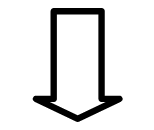

МАТЕМАТИЧЕСКОЕ ОБЕСПЕЧЕНИЕ МИКРО-ЭВМ
"ЭЛЕКТРОНИКА БK0010" "ЭЛЕКТРОНИКА
БК0010Ш"
ДРАЙВЕР-МОНИТОРНАЯ СИСТЕМА
РУКОВОДСТВО СИСТЕМНОГО ПРОГРАММИСТА
00001-01.32.03
АННОТАЦИЯ
В данном руководстве даётся краткое описание архитектуры Микро-ЭВМ "Электроника БК 0010", "Электроника БК 0010-01" и Микро-ЭВМ "Электроника БК 0010Ш" и функциональных возможностей управляющих программ.
Содержание
- 1. ВВЕДЕНИЕ
- 2. СОСТАВ БК0010(01)
- 3. АРХИТЕКТУРА МИКРО-ЭВМ
- 4. РАСПРЕДЕЛЕНИЕ АДРЕСНОГО ПРОСТРАНСТВА
- 5. Структура системного программного обеспечения
- 6. Описание функций пускового монитора
- 7. Клавиатура
-
8. Устройство
отображения информации
- 8.1. Функционирование устройства отображения информации
- 8.2. Команды драйвера ТВ-приёмника
-
8.3. Кодировка
символов
- 8.3.1. Коды графических символов.
- 8.3.2. Специальные коды
- 8.3.3. Формирование строки символов
- 8.3.4. Запись символа в служебную строку
- 8.3.5. Установка координат курсора
- 8.3.6. Съём координат курсора
- 8.3.7. Формирование точки по координатам
- 8.3.8. Формирование вектора по координатам
- 8.3.9. Чтение слова состояния дисплея.
- 9. Обмен с накопителем на магнитной ленте (МЛ)
- 10. Обмен по последовательному каналу
- 11. Работа с портом ввода-вывода
- 12. Программирование Микро-ЭВМ
- Приложение 1
- Приложение 2
- Приложение 3
- Приложение 4
1. ВВЕДЕНИЕ
Настоящее руководство ориентировано на пользователей Микро-ЭВМ "Электроника БК 0010", "Электроника БК 0010-01", "Электроника БК 0010Ш" (далее БК - для всех Микро-ЭВМ, или БК-Ш - для Микро-ЭВМ "Электроника БК0010Ш"), применяющих для своей работы Ассемблер, или составляющих программы в машинных кодах.
В руководстве содержатся инструкции, необходимые для обращения к монитору и драйверам внешних устройств, описана структура адресного пространства.
В приложении 1 дан перечень макрокоманд и микропроцессора.
В приложении 2 приведены директивы отладки, в приложении 3 приводятся коды символов клавиатуры, используемые в Микро-ЭВМ.
Функции, описанные в разделе 5.2.4 и главе 10 - работа с последовательным каналом, а также в разделе 8.3.2 - работа с цветным изображением, поддержаны математическим обеспечением, однако, возможность их использования решается самим пользователем путём доработки Микро-ЭВМ.
Приведённые в руководстве числа и коды в большинстве случаев исчисляются в восьмеричной системе счисления. Числа, отмеченные буквой "Д", приведены в десятичной системе счисления, кроме чисел с буквой "Д" в десятичной системе приведены те числа, написание которых не может быть истолковано иначе, например 28, 99, 16K и т.д.
2. СОСТАВ БК0010(01)
В состав БК0010(01) входят:
- информационно-вычислительное устройство;
- блок МСТД;
- блок питания;
- кабели связи с внешними устройствами.
В качестве устройства отображения информации можно использовать бытовой телевизионный (ТВ) приёмник. В качестве внешнего запоминающего устройства и микро-ЭВМ может быть подключен кассетный монофонический магнитофон типа "Электроника 302". Для записи и хранения информации используются компакт-кассеты типа МК-60.
БК-Ш содержит устройство последовательного обмена, которое обеспечивает обмен по протоколу ИРПС со скоростью 9600 БОД.
Микро-ЭВМ содержит 16-ти разрядный параллельный программируемый интерфейс (порт ввода-вывода), который можно использовать для управления периферийными устройствами.
Управление внешними устройствами микро-ЭВМ осуществляет с помощью управляющих программ, размещённых в системном ПЗУ объёмом 8К байт. Обращение к управляющим программам осуществляется с помощью системных запросов (команд EMT с заданным аргументом) с указанием необходимых параметров.
Входной язык БК - "БЕЙСИК". Компилятор языка "БЕЙСИК" занимает 24 Кбайта и размёщен в трех микросхемах съёмного ПЗУ.
При подключении к разъёму системной магистрали (левый разъём) Микро-ЭВМ блока МСТД входным языком БК становится язык "Фокал". Интерпретатор "Фокала" занимает 8 Кбайт и размещён в одной микросхеме блока МСТД.
Обращение к дополнительным пользовательским программам также может осуществляться с помощью системных запросов, для чего в системном ПЗУ зарегистрировано 16 переходов по адресам, входящим в адресное пространство третьего съёмного ПЗУ.
|
ПРЦ |
ОЗУ |
ПЗУ |
|||||||||||
|
Системная магистраль |
|||||||||||||
|
УУ клавиатурой |
УУ ТВ-монитором |
УУ кассетным магнитофоном |
16-разрядный порт ввода-вывода |
выход на последовательный канал |
|||||||||
|
клавиатура ЭВМ |
ТВ-монитор |
кассетный магнитофон |
технологическая установка |
________________ линия |
|||||||||
Рис. 1 Структура Микро-ЭВМ.
3. АРХИТЕКТУРА МИКРО-ЭВМ.
Микро-ЭВМ построена на основе микропроцессорного комплекта серии K1801 и включает:
- однокристальный 16-разрядный микропроцессор K1801BM1;
- пользовательское ОЗУ ёмкостью 16K БАЙТ;
- экранное ОЗУ ёмкостью 16K БАЙТ;
- системное ПЗУ ёмкостью 8К БАЙТ;
- сменное ПЗУ ёмкостью 24К БАЙТ (три микросхемы по 8К БАЙТ);
- устройство управления клавиатурой;
- устройство формирования видеосигнала для ТВ-приёмника;
- устройство управления кассетным магнитофоном;
- устройство последовательного обмена - ИРПС (БК-Ш);
- 16-разрядный программируемый порт ввода-вывода.
Обслуживание перечисленных устройств осуществляется соответствующими программами-драйверами данных устройств, размещёнными в системном ПЗУ. Для подключения внешних устройств на плате Микро-ЭВМ закреплены соответствующие разъёмы, а также разъём порта ввода-вывода.
Для настройки и тестирования Микро-ЭВМ на внешний разъём выведена также системная магистраль Микро-ЭВМ. К этому разъёму может подключаться блок МСТД (при необходимости использования языка "Фокал"). Вследствие малой нагрузочной способности магистрали подключение других внешних устройств к магистрали Микро-ЭВМ не рекомендуется.
РАСПРЕДЕЛЕНИЕ АДРЕСНОГО ПРОСТРАНСТВА МИКРО-ЭВМ
(при отключенном
блоке МСТД)
1. Конфигурация без расширенной памяти.
| 000000 | |
| Область стека и системных, переменных | |
| 001000 | |
| ОЗУ пользователя | |
| 040000 | |
| ОЗУ экрана | |
| 100000 | |
| Системное ПЗУ (монитор и драйверы) | |
| 120000 | |
| 1-е сменное (съёмное) ПЗУ "Бейсик" | |
| 140000 | |
| 2-е сменное ПЗУ "Бейсик" | |
| 160000 | |
| 3-е сменное ПЗУ "Бейсик" | |
| 177600 | |
| Область системных регистров | |
| 177777 |
2. Конфигурация с расширенной памятью
| 000000 | |
| Область стека и системных переменных | |
| 001000 | |
| ОЗУ пользователя | |
| 040000 | |
| ОЗУ пользователя или экрана | |
| 070000 | |
| ОЗУ экрана | |
| 100000 | |
| Системное ПЗУ (монитор, драйверы) | |
| 120000 | |
| 1-е сменное ПЗУ "БЕЙСИК" | |
| 140000 | |
| 2-е сменное ПЗУ "БЕЙСИК" | |
| 160000 | |
| 3-е сменное ПЗУ "БЕЙСИК" | |
| 177600 | |
| Область системных регистров | |
| 177777 |
РАСПРЕДЕЛЕНИЕ АДРЕСНОГО ПРОСТРАНСТВА МИКРО-ЭВМ
(при подключенном
блоке МСТД)
1. Конфигурация без расширенной памяти.
| 000000 | |
| Область стека и системных, переменных | |
| 001000 | |
| ОЗУ пользователя | |
| 040000 | |
| ОЗУ экрана | |
| 100000 | |
| Системное ПЗУ (монитор и драйверы) | |
| 120000 | |
| ПЗУ ("Фокал") | |
| 140000 | |
| 160000 | |
| ПЗУ (Тест-мониторная система) | |
| 177600 | |
| Область системных регистров | |
| 177777 |
2. Конфигурация с расширенной памятью
| 000000 | |
| Область стека и системных переменных | |
| 001000 | |
| ОЗУ пользователя | |
| 040000 | |
| ОЗУ пользователя или экрана | |
| 070000 | |
| ОЗУ экрана | |
| 100000 | |
| Системное ПЗУ (монитор, драйверы) | |
| 120000 | |
| ПЗУ ("Фокал") | |
| 140000 | |
| 160000 | |
| ПЗУ (Тест-мониторная система) | |
| 177600 | |
| Область системных регистров | |
| 177777 |
4. РАСПРЕДЕЛЕНИЕ АДРЕСНОГО ПРОСТРАНСТВА
Объём адресного пространства Микро-ЭВМ определяется длиной слова микропроцессора K1801BM1 (16 разрядов) и составляет 64К байтов, половину этого пространства занимает ОЗУ с адресами от 0 до 77777. Остальная часть отведена под ПЗУ и системные регистры Микро-ЭВМ.
Область ОЗУ с адресами 0 - 777 отведена под системный стек и переменные драйверов. При этом стек может нарастать от ячейки с адресом 776 до ячейки с адресом 300. Однако при работе с драйвером магнитофона следует иметь в виду, что на время работы драйвер использует ячейки с адресами 300-352. Указатель стека устанавливается на адрес 1000 при запуске Микро-ЭВМ пусковым монитором. Если объём стековой области не достаточен для работы пользовательской программы, то указатель стека может быть установлен на другое значение данной программой.
Область ОЗУ с адресами 1000 - 37777 является рабочей областью и используется для работы пользовательских программ.
Область ОЗУ с адресами 40000 - 77777 является экранной памятью и служит для формирования изображения, выводимого на экран ТВ-приёмника.
Предусмотрен режим работы Микро-ЭВМ с расширенным объёмом рабочей области ОЗУ. В этом режиме часть ОЗУ экрана отводится под рабочую область, а формирование изображения осуществляется в области ОЗУ с адресами 70000 - 77777. Таким образом, рабочая область ОЗУ может быть увеличена с 16K до 28К БАЙТ, переключение в режим расширенной памяти осуществляется специальным кодом 214, который можно подать с клавиатуры или непосредственно из программы на драйвер ТВ-приёмника.
Остальная часть адресного пространства предназначена для размещения 4-х микросхем ПЗУ (или ППЗУ), объёмом 8К БАЙТ каждая с записанными в них системными и пользовательскими программами, Подключение микросхем осуществляется через колодки, размещённые на плате Микро-ЭВМ, Распределение адресного пространства между микросхемами осуществляется следующим образом:
- адреса 100000 - 117777 занимает ПЗУ с пусковым монитором и драйверами внешних устройств (системное ПЗУ, 8К);
- адреса 120000 - 157777 занимают съёмные ПЗУ, в которых может быть размешена управляющая система (при отключенном блоке МСТД - "Бейсик", при подключенном - "Фокал" и тест-мониторная система);
- область адресов 177600 - 177777 отведена под системные регистры Микро-ЭВМ.
Поскольку область адресов, отведенная под системные регистры, попадает в адресное пространство, занимаемое четвёртой микросхемой ПЗУ (объём ПЗУ - 8К БАЙТ), при подключении данного ПЗУ к Микро-ЭВМ область ПЗУ с адресами 177600-177777 блокируются и, следовательно, не может быть использована, это следует иметь в виду при подготовке программ для зашивки в ПЗУ с адресами 160000.
Если в комплекте БК имеется блок ПЗУ с мониторной системой диагностики, то при подключении блока к разъёму системной магистрали Микро-ЭВМ ПЗУ устанавливается в область с адресами 160000-177600. При этом блокируется работа третьего съёмного ПЗУ, установленного на плате Микро-ЭВМ и имеющего ту же область адресов.
4.1. Системные регистры
Для работы с внешними устройствами используется пять системных регистров в Микро-ЭВМ "Электроника БК 0010" и девять системных регистров в Микро-ЭВМ "Электроника БК 0010Ш".
4.1.1. Регистр состояния клавиатуры
Регистр предназначен для отображения состояния клавиатуры.
Адрес регистра: 177660
Формат:
15
14
13
12
11
10
09
08
07
06
05
04
03
02
01
00
х
х
Разряд 6 - маска прерываний от клавиатуры.
"0" - разрешено прерывание от клавиатуры
"1" - запрещено прерывание от клавиатуры.
Разряд доступен по записи и чтению.
Разряд 7 - флаг состояния клавиатуры.
Устанавливается в единицу при поступлении в регистр данных клавиатуры нового кода. Сбрасывается в "0" при чтении регистра данных клавиатуры. Доступен только по чтению.
Если разряд "6" установлен в "0", то при установке разряда 7 в "1" по системной магистрали идёт запрос на прерывание от клавиатуры.
Разряды 0-5, 8-15 не используются.
4.1.2. Регистр данных клавиатуры
Предназначен для записи кодов клавиатуры.
Адрес регистра: 177662
Формат регистра:
15
14
13
12
11
10
09
08
07
06
05
04
03
02
01
00
х
х
х
х
х
х
х
Разряды 0-6 используются для записи семиразрядного кода с клавиатуры, доступны только по чтению. Запись нового кода в регистр не производится до тех пор, пока не будет прочитан предыдущий код.
Разряды 7-15 не используются.
4.1.3. Регистр смещения
Предназначен для рулонного сдвига информации на экране по вертикали путём задания адреса участка экранного ОЗУ, с которого должен начинаться экран.
Адрес регистра: 177664
Форма регистра:
15
14
13
12
11
10
09
08
07
06
05
04
03
02
01
00
х
х
х
х
х
х
х
х
х
Разряды 0-7 предназначены для задания адреса экранного ОЗУ. Изменению младшего разряда регистра на 1 соответствует изменение адреса экранного ОЗУ на 100 байт, что соответствует длине информационного поля, помещаемого в одной телевизионной строке на экране. Таким образом, изменяя на 1 содержимое регистра смещения можно сместить изображение на экране на 1 телевизионную строку вверх или вниз. Число комбинаций, которое можно поместить в 8-ми разрядах равно 256Д, что соответствует 256Д-ти телевизионным строкам, отображаемым на экране. Для приведения экрана в исходное состояние в регистр смещения необходимо записать константу 330. В этом случае в верхней ТВ-строке экрана будет отображена информация, содержащаяся в начале экранного ОЗУ, т.е. с адреса 40000.
Разряд 9 используется для управления режимом расширенной памяти. "0" в разряде задаёт режим отображения на экране 1/4экранного ОЗУ с адресами 70000 - 77777 (режим расширенной рабочей области ОЗУ).
Разряды 8, 10-15 не используются.
Регистр доступен по записи и чтению.
4.1.4. Регистр параллельного программируемого интерфейса (порта ввода-вывода)
Предназначен для записи информации выдаваемой на выходном регистре порта, и чтения информации, устанавливаемой на входном регистре порта.
Адрес регистра: 177714.
Формат регистра:
Выходной регистр порта
15
14
13
12
11
10
09
08
07
06
05
04
03
02
01
00
х
х
х
х
х
х
х
х
х
х
х
х
х
х
х
х
Входной регистр порта
15
14
13
12
11
10
09
08
07
06
05
04
03
02
01
00
х
х
х
х
х
х
х
х
х
х
х
х
х
х
х
х
Все 16 разрядов регистра используются для записи и чтения информации.
Регистр доступен только по записи в выходной регистр порта и только по чтению из входного регистра порта, т.е. отсутствует возможность прочитать содержимое выходного регистра порта.
4.1.5. Регистр управления системными внешними устройствами (ВУ)
Используется для задания адреса начального пуска процессора, а также для управления внешними устройствами Микро-ЭВМ.
Адрес: 177716
Формат:
15
14
13
12
11
10
09
08
07
06
05
04
03
02
01
00
х
х
х
х
х
х
х
х
х
х
х
х
х
х
х
х
Разряды 8-15 служат для задания адреса пуска процессора при включении питания, при этом младший БАЙТ адреса принимается равным 0. В Микро-ЭВМ адрес начального пуска процессора равен 100000. Разряды доступны только по чтению.
Разряды 0-3 служат для задания режимов работы процессора, доступны только по чтению.
Разряды 4-7 предназначены для управления внешними устройствами Микро-ЭВМ и имеют выход на 4-х разрядный выходной регистр системного порта и 4-х разрядный входной регистр системного порта.
Выходной регистр
07
06
05
04
х
х
х
х
Входной регистр
07
06
05
04
х
х
х
х
Назначение разрядов выходного регистра:
Разряд 4 используется для передачи информации на линию (исходное состояние разряда - "ЛОГ 1").
Разряд 5 используется для передачи информации на магнитофон либо сигнала готовности на линию (исходное состояние "ЛОГ 0"); одновременный обмен информацией с магнитофоном и по последовательному каналу недопустим.
Разряд 6 используется для передачи информации на магнитофон с сигнала при нажатии клавиши Микро-ЭВМ (исходное состояние - "ЛОГ 0").
Разряд 7 используется для управления двигателем магнитофона. "ЛОГ 1" в разряде соответствует команде "Стоп", "ЛОГ 0" - команде "Пуск", исходное состояние разряда - "ЛОГ 1".
Выходной регистр порта доступен только по записи.
Назначение разрядов входного регистра.
Разряд 4 используется для чтения информации с линии.
Разряд 5 используется для чтения информации с магнитофона.
Разряд 6 служит индикатором нажатия клавиши ("ЛОГ 0" клавиша нажата, "ЛОГ 1" - клавиша отжата). Используется при реализации режима "Повтор".
Разряд 7 используется для чтения сигнала готовности с линии.
4.1.6. Регистры блока ИРПС
Примечание. Материал данного подраздела справедлив только для Микро-ЭВМ "Электроника БК 0010Ш"!
Блок ИРПС предназначен для обеспечения обмена информацией между Микро-ЭВМ "Электроника БК 0010Ш" и внешними устройствами по интерфейсу для радиального подключения устройств с последовательной передачей информации.
Блок ИРПС содержит 4 регистра:
| Регистр | Адрес |
|---|---|
| Регистр состояния приёмника | 176560 |
| Буферный регистр приёмника | 176562 |
| Регистр состояния передатчика | 176564 |
| Буферный регистр передатчика | 176566 |
4.1.6.1. Регистр состояния приёмника имеет следующий формат:
15
14
13
12
11
10
09
08
07
06
05
04
03
02
01
00
х
х
х
х
0-5Р, 8-11Р, 13P, 14P (буква Р обозначает разряд) - не используются, читаются как лог."0".
6Р - разрешение работы приёмника по прерыванию. Если 6Р установлен в "1", то прерывание разрешено, если в "0", - запрещено. Доступен по записи и чтению.
7Р - флаг состояния приёмника, устанавливается в "1" при поступлении посылки в буферный регистр приёмника. Посылка - порция информации в семь или восемь БИТ. Доступен по чтению.
12P - ошибка переполнения. Устанавливается в "1", если в регистр приёмника поступило более одной посылки без чтения из буферного регистра приёмника первой поступившей посылки. При этом независимо от числа поступивших в канал приёмника посылок в буферном регистре сохраняется первая посылка. Доступен по чтению.
15Р - ошибка в принятой посылке, доступен по чтению.
4.1.6.2. Буферный регистр приёмника.
Доступен по чтению
15
14
13
12
11
10
09
08
07
06
05
04
03
02
01
00
х
х
х
х
х
х
х
х
0-7Р - содержит посылку, принятую с линии. В 0Р находится первый БИТ посылки, в 7Р - восьмой.
8-15P - не используются, читаются как ЛОГ "0".
4.1.6.3. Регистр состояния передатчика.
15
14
13
12
11
10
09
08
07
06
05
04
03
02
01
00
х
х
х
х
0Р - разрыв линии, доступен по записи и чтению.
2Р - проверка работы. Доступен по записи и чтению.
6Р - разрешение работы передатчика по прерыванию. Если 6Р установлен в "1", то прерывание разрешено, если в "0" - запрещено. Доступен по записи и чтению.
7Р - флаг состояния передатчика. Устанавливается ЛОГ "1" в момент выдачи посылки на линии. Сбрасывается в "0" по записи информации в буферный регистр передатчика. 7 разряд в "1" свидетельствует о том, что буферный регистр передатчика пустой. Если запись информации в буферный регистр передатчика произошла во время посылки, то следующая посылка начинается сразу же по окончании предыдущей. 7Р доступен по чтению.
1P, 3-5P, 8-15P - не используются, читаются как ЛОГ "0".
4.1.6.4. Буферный регистр передатчика
Доступен по записи.
15
14
13
12
11
10
09
08
07
06
05
04
03
02
01
00
х
х
х
х
х
х
х
х
0-7Р разряды данных для передачи посылки на линию. В 0Р записывается первый БИТ посылки, в 7Р восьмой.
5. Структура системного программного обеспечения
В состав системного программного обеспечения входят следующие управляющие программы:
- пусковой монитор;
- драйвер клавиатуры;
- драйвер ТВ-монитора;
- драйвер магнитофона;
- драйвер последовательного канала.
Пусковой монитор предназначен для инициализации Микро-ЭВМ по включению питания (либо при запуске, процессора с помощью тумблера) и запуска рабочей программы, размещённой в съёмном ПЗУ с адресом 120000. Кроме этого пусковой монитор предоставляет пользователю средства для загрузки нужной программы с магнитофона или по линии и её запуска.
Драйвер клавиатуры обеспечивает работу пользователя с клавиатурой Микро-ЭВМ.
Драйвер ТВ-монитора обеспечивает формирование алфавитно-цифровой и графической информации на экране.
Драйвер магнитофона обеспечивает обмен информацией с магнитофоном.
Драйвер последовательного канала обеспечивает обмен информацией по линии в рамках протокола ИРПС со скоростями от 50 до 9600 БОД.
Все управляющие программы размещены в системном ПЗУ, занимающем адресное пространство 100000-117777.
Кроме перечисленных программ системное ПЗУ включает в себя область связи, содержащую адреса входов в драйверы внешних устройств, а также адреса переходов на третье съёмное ПЗУ и диспетчер команды EMT. Диспетчер команды EMT обеспечивает обработку команды EMT и передачу управления на драйверы по требуемому входу, в зависимости от аргумента команды.
При обработке программных запросов содержимое регистров общего назначения R0-R5, за исключением особо указанных случаев, не меняется.
5.1. Адреса векторов прерывания
Обработка прерываний в Микро-ЭВМ производится по векторам, размешенным в области ОЗУ с адресами 0-364.
В таблице 1 приведены адреса векторов прерываний Микро-ЭВМ.
| №№ пп | Источник прерывания | Адрес вектора прерывания |
|---|---|---|
| 1. | Зависание при передаче данных по каналу или при нажатии клавиша "СТОП" | 000004 |
| 2. | Резервный код | 000010 |
| 3. | Прерывание по T-разряду | 000014 |
| 4. | Прерывание по команде IOT | 000020 |
| 5. | Авария сетевого питания | 000024 |
| 6. | Прерывание по команде EMT | 000030 |
| 7. | Прерывание по команде TRAP | 000034 |
| 8. | Прерывание от клавиатуры | 000060 |
| 9. | Сигнал IRQ2 | 000100 |
| 10. | Прерывание от клавиатуры (код нижнего регистра) | 000274 |
| 11*. | Прерывание от приёмника | 000360 |
| 12*. | Прерывание от передатчика | 000364 |
Примечание: Звёздочкой помечены источники прерывания, справедливые только для БК-Ш.
5.2. Программные запросы
5.2.1. Драйвер клавиатуры
|
EMT 4 |
- |
инициализация драйвера клавиатуры |
||
|
EMT 6 |
- |
чтение кода символа с клавиатуры |
||
|
выход: |
R0 - |
код в младшем байте |
||
|
EMT 10 |
- |
чтение строки с клавиатуры |
||
|
вход: |
R1 - |
адрес буфера строки |
||
|
R2 - |
длина строки (мл. байт) |
|||
|
EMT 12 |
- |
установка ключей клавиатуры |
||
|
вход: |
R0 - |
номер ключа (1-10) |
||
|
|
R1 - |
адрес текста ключа |
||
5.2.2. Драйвер ТВ-монитора
|
EMT 14 |
- |
инициализация драйверов системного ПЗУ |
||
|
EMT 16 |
- |
формирование символов и переключение режимов |
||
|
вход: |
R0 - |
код в младшем байте |
||
|
EMT 20 |
- |
формирование строки символов |
||
|
вход: |
R1 - |
адрес строки символов |
||
|
R2 - |
длина строки (мл. байт) |
|||
|
EMT 22 |
- |
запись символа в служебную строку |
||
|
вход: |
R0 - |
код символа (0 - сброс строки) |
||
|
R1 - |
номер позиции в служебной строке |
|||
|
EMT 24 |
- |
установка курсора по координатам |
||
|
вход: |
R1 - |
координата X |
||
|
R2 - |
координата Y |
|||
|
EMT 26 |
- |
получение координат курсора |
||
|
выход: |
R1 - |
координата X |
||
|
R2 - |
координата Y |
|||
|
EMT 30 |
- |
формирование точки по координатам |
||
|
вход: |
R0 - |
1 запись точки |
||
|
R1 - |
координата X |
|||
|
R2 - |
координата Y |
|||
|
EMT 32 |
- |
формирование векторов |
||
|
вход: |
R0 - |
1 формирование вектора |
||
|
R1 - |
координата X - конца вектора |
|||
|
R2 - |
координата Y - конца вектора |
|||
|
EMT 34 |
- |
чтение слова состояния дисплея |
||
|
выход: |
R0 - |
слово состояния дисплея |
||
5.2.3. Драйвер магнитофона
|
EMT 36 |
- |
передача управления драйверу магнитофона |
||
|
вход: |
R1 - |
адрес блока параметров |
||
5.2.4. Драйвер последовательного канала
|
EMT 40 |
- |
инициализация драйвера последовательного канала |
||
|
вход: |
R0 - |
номер скорости обмена |
||
|
EMT 42 |
- |
передача байта на линию |
||
|
вход: |
R0 - |
младший байт на передачу |
||
|
EMT 44 |
- |
приём байта с линии |
||
|
выход: |
R0 - |
младший байт с линии |
||
|
EMT 46 |
- |
передача массива на линию |
||
|
вход: |
R1 - |
адрес массива на передачу |
||
|
R2 - |
длина массива в байтах |
|||
|
EMT 50 |
- |
приём массива с линии |
||
|
вход: |
R1 - |
адрес ОЗУ для массива |
||
|
R2 - |
длина массива в байтах |
|||
5.2.5. Резервные входы
| Команда | Адрес на передачу управления |
|---|---|
| EMT 52 | 160000 |
| EMT 54 | 160004 |
| EMT 56 | 160010 |
| EMT 60 | 160014 |
| EMT 62 | 160020 |
| EMT 64 | 160024 |
| EMT 66 | 160030 |
| EMT 70 | 160034 |
| EMT 72 | 160040 |
| EMT 74 | 160044 |
| EMT 76 | 160050 |
| EMT 100 | 160054 |
| EMT 102 | 160060 |
| EMT 104 | 160064 |
| EMT 106 | 160070 |
| EMT 110 | 160074 |
Рис. 2 структура системного ПО.
6. Описание функций пускового монитора
Пусковой монитор предназначен для инициализации системы при включении питания Микро-ЭВМ и запуска системной программы, расположенной в ПЗУ. Кроме этого монитор располагает некоторыми диалоговыми средствами, представляющими пользователю возможность загрузить необходимую программу с МЛ или с линии и запустить её.
Инициализация системы заключается в установке указателя стека на адрес 1000, установке векторов прерываний по команде EMT. Кроме того производится установка рабочих ячеек управляющих программ, очистка экрана. Установка скорости обмена по линии 9600 БОД, очистка пользовательского порта (адрес 177714), установка в исходное состояние регистра управления системными ВУ, через который подключены магнитофон и линия.
После инициализации системы управление передаётся системной программе, которая должна быть расположена, в системном ПЗУ по адресу 120000. В качестве такой программы может быть любая программа, установленная пользователем. Конкретным примером является компилятор языка "БЕЙСИК". Передача управления системной программе осуществляется с помощью команды JSR PC,@#120000, в результате выполнения которой адрес возврата запоминается в стеке. Таким образом, сохраняется возможность вернуться в пусковой монитор, который в этом случае переходит в диалоговый режим.
Если ПЗУ с системной программой отсутствует, то при выполнении команды передачи управления возникает прерывание по зависанию, и управление передаётся в пусковой монитор, который переходит в режим диалога с оператором. Признаком входа в диалоговый режим монитора является знак вопроса на экране.
6.1. Команды пускового монитора
В диалоговом режиме монитор выполняет ряд команд, которые дают возможность загрузить программу или данные в заданную область ОЗУ с МЛ или с линии и запустить программу с данного адреса. Монитор допускает использование команд как в полном, так и в сокращённом формате. Далее по тексту сокращённый формат команд включает только подчёркнутые элементы.
1. Загрузка с МЛ.
МАГ <адрес загрузки>

Имя? <имя файла>

Адрес загрузки задаётся в виде восьмеричного числа и определяет адрес ОЗУ, куда необходимо считать ФАЙЛ. Если адрес загрузки не указан или задан равным нулю, то загрузка ФАЙЛА производится по адресу, содержащемуся в оглавлении загруженного ФАЙЛА. Если допущена ошибка при наборе адреса, то необходимо ввести несколько нулей или пробел, после чего ввести полный адрес.
В ответ на появление подсказки "Имя ?" необходимо ввести
имя считываемого ФАЙЛА. Имя должно содержать не более 16
символов. Если имя не указано, то производится загрузка ФАЙЛА с именем, содержащим
16 пробелов. Если допущена ошибка при наборе имени,
то исправить её можно при помощи клавиши
 , удалив часть имени
вместе с ошибкой, после чего набрать оставшуюся часть имени.
, удалив часть имени
вместе с ошибкой, после чего набрать оставшуюся часть имени.
После ввода имени ФАЙЛА необходимо подмотать МЛ к предполагаемому месту расположения ФАЙЛА и перевести магнитофон в режим чтения, нажав на клавишу "ПУСК" на клавиатуре магнитофона.
При поиске заданного ФАЙЛА на экране будут распечатаны имена файлов, просмотренных во время поиска. Если обнаружен требуемый ФАЙЛ, то имя его не распечатывается, а ФАЙЛ читается в заданную область ОЗУ. После окончания чтения на экране появится знак вопроса. Если ФАЙЛ был считан с ошибкой, то на экране выдаётся сообщение "ОШИБКА".
После загрузки ФАЙЛА в ячейке 264 - содержится адрес ОЗУ, куда загружен ФАЙЛ, а в ячейке 266 - длина ФАЙЛА в байтах.
2. Загрузка с линии.
Линия <адрес загрузки>

Адрес загрузки задаётся в виде восьмеричного числа и определяет адрес ОЗУ, куда должен быть загружен ФАЙЛ с линии, если адрес не задан или задан равным нулю, то загрузка производится по адресу, указанному в оглавлении ФАЙЛА. Исправление ошибок при вводе адреса осуществляется таким же образом, как и в предыдущей команде.
Перед загрузкой ФАЙЛА монитор производит инициализацию обмена. Этот процесс осуществляется путём передачи произвольного БАЙТА по линии в Микро-ЭВМ, содержащую загружаемый ФАЙЛ, и приёма этого же БАЙТА с линии. После этого монитор переходит в режим приёма оглавления ФАЙЛА, а затем и самого ФАЙЛА. Оглавление ФАЙЛА должно включать 4 БАЙТА, первые два из которых должны содержать адрес загрузки ФАЙЛА, а следующие два - длину ФАЙЛА в байтах, не включая оглавление. Адрес загрузки помещается в ячейку 264, а длина ФАЙЛА - в ячейку 266. После загрузки ФАЙЛА на экране появляется знак вопроса. Загрузка осуществляется на скорости 9600 БОД.
3. Запуск программы.
Старт <стартовый адрес>

По этой команде производится запуск программы с указанного адреса. Управление программе передаётся с помощью команды JSR PC,(адрес), поэтому в вызванной программе есть возможность вернуть управление монитору без перезапуска системы.
Если адрес запуска не указан, то происходит запуск по адресу, содержащемуся в ячейке 264.
4. Передача управления на ПЗУ.
Пуск

По этой команде производится передача управления на ПЗУ, расположенное по адресу 140000. Адрес возврата при этом запоминается в стеке, и поэтому в вызванной программе есть возможность вернуть управление в монитор.
5. Запуск тестов.
Если в составе Микро-ЭВМ есть блок МСТД, то с помощью команды
Тест

можно передать управление на тестовые программы. Адрес запуска тестов - 160100.
6. Перезапуск системной программы.
Для того, чтобы осуществить перезапуск системной программы, не выключая питания Микро-ЭВМ, необходимо ввести команду, первым символом которой должна быть одна из букв латинского алфавита от А до К например,
BASIC

по этой команде произойдёт перезапуск системы и управление будет передано на ПЗУ по адресу 120000.
Для того чтобы прервать работу активной программы необходимо воспользоваться клавишей "СТОП" на клавиатуре Микро-ЭВМ, которая обеспечивает формирование запроса на прерывание по зависанию. Если данное прерывание не обрабатывается активной программой, то управление будет передано на пусковой монитор, который устанавливает указатель стека на адрес 1000, устанавливает системный порт в исходное состояние, производит инициализацию драйвера клавиатуры по команде EMT 4 и переходит в диалоговый режим.
7. Клавиатура
Клавиатура Микро-ЭВМ предназначена для ввода информации в режиме диалога с пользователем.
7.1. Состав клавиатуры
В состав клавиатуры входят 74 клавиши, которые по функциональному назначению подразделяются на четыре группы.
7.1.1. Группа регистровых клавиш
Группа регистровых клавиш обеспечивает переключение регистров клавиатуры:
- РУС - включает русский регистр;
- ЛАТ - включает латинский регистр;
- ЗАГЛ - включает режим формирования кодов заглавных букв;
- СТР - включает режим формирования кодов строчных букв;
- АР2 - включает дополнительный регистр только в нажатом состоянии;
 (шифт),
включает нижний регистр только в нажатом состоянии;
(шифт),
включает нижний регистр только в нажатом состоянии;- СУ - включает режим формирования управляющих кодов только в нажатом состоянии.
7.1.2. Группа управляющих клавиш
Группа управляющих клавиш предназначена для формирования управляющих кодов и управления режимами работы Микро-ЭВМ.
- клавиша "СТОП" обеспечивает формирование запроса на прерывание и используется для прерывания выполнения рабочей программы.
- клавиша "ШАГ" обеспечивает формирование управляющего кода, который может быть использован для управления режимами работы рабочей программы.
- клавиши "ИНД СУ" и "БЛОК РЕД" используются для управления режимами формирования информации на экране ТВ-монитора.
- клавиша "ПОВТ" предназначена для многократной выдачи кода с клавиатуры.
- клавиша "
 "
обеспечивает формирование управляющих кодов 12
("перевод строки") или 15 ("возврат
каретки") в зависимости от установленного в драйвере клавиатуры
режима.
"
обеспечивает формирование управляющих кодов 12
("перевод строки") или 15 ("возврат
каретки") в зависимости от установленного в драйвере клавиатуры
режима.
7.1.3. Группа алфавитно-цифровых клавиш
Группа алфавитно-цифровых клавиш обеспечивает ввод кодов цифр, специальных символов, заглавных и строчных букв русского и латинского алфавитов, некоторых управляющих кодов, обеспечивающих переключение режимов работы дисплея, а также управление программируемыми ключами.
Ввод кодов цифр осуществляется при нажатии на цифровые клавиши.
Ввод кодов символов, расположенных внизу цифровых клавиш, осуществляется
под шифтом " ".
".
Ввод заглавных и строчных букв русского и латинского алфавитов осуществляется при включении соответствующей комбинации регистров "ЗАГЛ", "СТР", "РУС", и "ЛАТ".
Ввод управляющих кодов, обеспечивающих переключение режимов работы дисплея, и управление программируемыми ключами осуществляется по регистру АР2.
7.1.4. Группа редактирующих клавиш
Группа редактирующих клавиш обеспечивает ввод кодов символов, выполняющих функции редактирования информации на экране ТВ-приёмника.
7.2. Функционирование клавиатуры
Управление клавиатурой осуществляется с помощью БИС клавиатуры, которая фиксирует нажатие клавиш и формирует в регистре данных соответствующие коды. При записи кода в регистр данных в регистре состояния клавиатуры выставляется признак готовности передачи кода, и формируется запрос на прерывание.
Клавиатура имеет два вектора прерывания с адресами 60 и 274. Это позволяет из 128 семиразрядных кодов, вырабатываемых БИС клавиатуры, получить полный набор восьмиразрядных кодов, используемых в Микро-ЭВМ. По вектору с адресом 274 обрабатываются коды, формируемые по регистру АР2, а также некоторые коды, вырабатываемые группой управляющих клавиш. Остальные коды обрабатываются по вектору 60.
Обработка кодов, передаваемых с клавиатуры, осуществляется драйвером клавиатуры, который производит чтение кода с регистра данных и передаёт его рабочей программе.
Передача кода осуществляется при поступлении запроса от рабочей программы на чтение кода, либо путём прерывания рабочей программы, в зависимости от режима, установленного в драйвере.
Признаком передачи кода по прерыванию является ненулевое содержимое ячейки 260. В этом случае содержимое данной ячейки рассматривается как адрес, по которому необходимо передать управление при обработке прерывания от клавиатуры. Получив управление, рабочая программа, может прочитать код, выдав запрос на чтение кода (команда EMT 6), Выполнить необходимые действия, после чего должна выйти из прерывания, подав команду RTS PC.
Если содержимое ячейки 260 нулевое, то управление рабочей программы при нажатии клавиши не передаётся, а передача кода осуществляется только по запросу рабочей программы на чтение кода.
Установка содержимого ячейки 260 осуществляется рабочей программой, при инициализации драйвера клавиатуры ячейка 260 обнуляется.
Обработка кодов, получаемых с БИС клавиатуры, осуществляется в зависимости от режимов, установленных в драйвере.
Коды букв, полученных при включенном русском регистре, а также коды, полученные по вектору 274, перекодируются в восьмиразрядные.
При обработке кода, полученного при нажатии клавиши " ",
учитывается содержимое ячейки 262. Если ячейка содержит
0, то в рабочую программу передаётся код
12 ("ПС"), если содержимое ячейки
отлично от 0, то передаётся код
15 ("ВК"). При инициализации драйвера клавиатуры ячейка
262 обнуляется.
",
учитывается содержимое ячейки 262. Если ячейка содержит
0, то в рабочую программу передаётся код
12 ("ПС"), если содержимое ячейки
отлично от 0, то передаётся код
15 ("ВК"). При инициализации драйвера клавиатуры ячейка
262 обнуляется.
Для многократного ввода одного и того же символа с клавиатуры служит клавиша "ПОВТОР". При удержании этой клавиши в рабочую программу по её запросу передаётся код последнего введённого символа.
Для ввода с клавиатуры отдельных часто употребляемых слов или фраз пользователь может использовать аппарат программируемых ключей. Драйвер позволяет запрограммировать 10 ключей с номерами 1-10, для этого используется команда EMT 12 с соответствующими параметрами. Выдача текста ключей осуществляется с помощью цифровых клавиш по нижнему регистру.
Драйвер клавиатуры даёт возможность пользователю приостановить работу процессора путём ввода символа @ по регистру "СУ". При повторном вводе этого или любого другого символа процессор продолжит работу.
Коды, вырабатываемые при нажатии клавиш "РУС", "ЛАТ", "ТАБ", "ПОВТОР", используются только драйвером клавиатуры и в рабочую программу не передаются.
|
ПОВТ |
КТ |
|
|
ИНД |
БЛОК |
ШАГ |
СБР |
СТОП |
|
|
; |
1 |
2 |
3 |
4 |
5 |
6 |
7 |
8 |
9 |
0 |
- |
/ |
|
|
TAB |
Й |
Ц |
У |
К |
Е |
Н |
Г |
Ш |
Щ |
З |
Х |
: |
Ъ |
ВС |
|
СУ |
Ф |
Ы |
В |
А |
П |
Р |
О |
Л |
Д |
Ж |
Э |
. |
|
|
|
|
|
||||||||||||
|
 |
Рис. 3 Схема расположения символов на клавиатуре Микро-ЭВМ
7.3. Команды драйвера клавиатуры
7.3.1. Инициализация драйвера клавиатуры
Команда:
EMT 4
По данной команде производится установка векторов прерываний клавиатуры,
в регистре состояния сбрасывается маска прерываний от клавиатуры, устанавливается
режим передачи кодов по запросам рабочей программы. Устанавливается режим передачи
кода 12 при нажатии клавиши " ".
".
Содержимое R0 не сохраняется.
7.3.2. Чтение кода с клавиатуры
Команда:
EMT 6
Выходные данные:
R0 - код в младшем байте
Производится чтение кода с клавиатуры и запись его в младший байт R0, после чего управление возвращается вызвавшей программе.
7.3.3. Чтение строки с клавиатуры
Команда:
EMT 10
Входные параметры:
R1 - адрес ОЗУ для записи строки
R2 - ограничители строки:
мл. байт - длина строки в байтах (если 0, то 20000 байтов)
ст. байт - код символа - ограничителя строки
По данной команде производится ввод строки по адресу, заданному в R1. Ввод строки заканчивается при выполнении одного из двух ограничивающих условий. Если завершение ввода строки произошло по ограничивающему символу, то этот символ записывается в конце строки. При вводе строки для исправления допущенных ошибок можно пользоваться клавишей, которая обеспечивает удаление последнего введённого символа.
После ввода строки в R1 хранится адрес следующего за последним введённым байта. В R2 - разность между входным значением и длиной введённой строки.
7.3.4. Установка ключей клавиатуры
Команда:
EMT 12
Входные параметры:
R0 - номер программируемого ключа (1-10)
R1 - адрес текста ключа (первый байт - длина текста)
Осуществляется программирование ключа с номером, указанным в R0. Каждая цифровая клавиша задаёт ключ с соответствующим номером. При нажатии на заданную цифровую клавишу по регистру АР2, драйвер клавиатуры выдаёт текст ключа.
Если ключ не запрограммирован, реакция на нажатие клавиш отсутствует. Для сброса ключа необходимо подать в качестве параметра ключа нулевое значение адреса ключа. Содержимое R0 при выполнении команды не сохраняется.
8. Устройство отображения информации
Устройство предназначено для отображения информации, введённой с клавиатуры, а также получаемой в процессе работы активной программы.
8.1. Функционирование устройства отображения информации
Отображение информации осуществляется на экране ТВ-приёмника подключенного к Микро-ЭВМ. Формирование отображаемой информации производится в экранном ОЗУ объёмом 16K байт, БИС управления ТВ-монитором, размещённая на плате Микро-ЭВМ, осуществляет сканирование экранного ОЗУ и формирование видеосигнала, передаваемого на ТВ-приёмник.
При работе с чёрно-белым ТВ-приёмником каждый БИТ экранного ОЗУ отображает в точку на экране. Таким образом, можно отображать на экране 256Д строк по 512Д точек в каждой. Это позволяет сформировать на экране 25Д символьных строк, при этом верхняя строка является служебной и предназначена для отображения режимов формирования информации на экране, а также для вывода служебной информации пользователя.
Каждая строка может содержать 64Д символа обычной ширины и 32Д - удвоенной ширины, когда каждой точке соответствует два бита экранной памяти.
Формирование символов осуществляется в матрице 10Д * 8 точек, при этом за базовую матрицу для основного набора символов принята матрица 7 * 5 точек. Исключение составляют некоторые символы строчных букв, элементы которых выходят за пределы базовой матрицы, а также символы табличной графики.
В случае работы в графическом режиме для формирования графического изображения используется поле 512Д * 240Д точек (либо 256Д * 240Д точек, в режиме формирования символов двойной ширины).
В Микро-ЭВМ предусмотрен режим работы с расширенным объёмом пользовательского ОЗУ, когда часть экранного ОЗУ используется для работы пользовательской программы. В этом режиме для формирования изображения отводится только 4К БАЙТА ОЗУ, в которых помещается служебная строка и 4 информационных, либо графическое поле 512Д * 40Д точек. Информационное поле в данном режиме размещается в верхней части экрана.
Формирование изображения и управление режимами работы осуществляется драйвером ТВ-приёмника. Для управления драйвером ТВ-приёмника используется 9 команд, при этом управление основным потоком информации между рабочей программой и драйвером осуществляется командой EMT 16.
8.2. Команды драйвера ТВ-приёмника
8.2.1. Инициализация драйверного модуля
Команда
EMT 14
Команда обеспечивает инициализацию всех драйверов системного ПЗУ, осуществляет сброс рабочих ячеек драйверов в исходное состояние, установку всех векторов прерываний, очистку экрана, установку исходных режимов отображения информации, очистку порта ввода-вывода, установку системного порта в исходное состояние, установку скорости обмена на линии 9600 БОД. Стек в исходное состояние не устанавливается. Содержимое R0-R4 не сохраняется.
8.2.2. Передача кодов на драйвер
Команда
EMT 16
Входные параметры
R0 - код в младшем байте
Команда обеспечивает передачу кодов драйверу ТВ-приёмника, который обрабатывает поступающие коды в соответствии с их назначением.
8.3. Кодировка символов
Коды символов, используемые в Микро-ЭВМ, по назначению можно разделить на две основные группы:
- Коды графических символов;
- Специальные коды, не вызывающие в обычном режиме формирование графических символов на экране.
| B7 | 0 | 0 | 0 | 0 | 0 | 0 | 0 | 0 | 1 | 1 | 1 | 1 | 1 | 1 | 1 | 1 | ||||
|---|---|---|---|---|---|---|---|---|---|---|---|---|---|---|---|---|---|---|---|---|
| B6 | 0 | 0 | 0 | 0 | 1 | 1 | 1 | 1 | 0 | 0 | 0 | 0 | 1 | 1 | 1 | 1 | ||||
| B5 | 0 | 0 | 1 | 1 | 0 | 0 | 1 | 1 | 0 | 0 | 1 | 1 | 0 | 0 | 1 | 1 | ||||
| B4 | 0 | 1 | 0 | 1 | 0 | 1 | 0 | 1 | 0 | 1 | 0 | 1 | 0 | 1 | 0 | 1 | ||||
| B3 | B2 | B1 | B0 | |||||||||||||||||
| 0 | 0 | 0 | 0 | СБР ТАБ * | ˽ | 0 | @ | P | ` | ШАГ | π | ┤ | ю | п | Ю | П | ||||
| 0 | 0 | 0 | 1 | ! | 1 | A | Q | a | q | ПОВТ ** | КР | ┴ | ← | а | я | А | Я | |||
| 0 | 0 | 1 | 0 | " | 2 | B | R | b | r | ИНД СУ * | ЗЕЛ | ♥ | ╬ | б | р | Б | Р | |||
| 0 | 0 | 1 | 1 | КТ | # | 3 | C | S | c | s | СИН | ┐ | ↑ | ц | с | Ц | С | |||
| 0 | 1 | 0 | 0 | ¤ | 4 | D | T | d | t | БЛОК РЕД * | ЧЁРН | ╡ | ♣ | д | т | Д | Т | |||
| 0 | 1 | 0 | 1 | % | 5 | E | U | e | u | ГРАФ | ├ | ─ | е | у | Е | У | ||||
| 0 | 1 | 1 | 0 | & | 6 | F | V | f | v | ЗАП | └ | ╫ | ф | ж | Ф | Ж | ||||
| 0 | 1 | 1 | 1 | ЗВ | ' | 7 | G | W | g | w | СТИР | ═ | │ | г | в | Г | В | |||
| 1 | 0 | 0 | 0 | ( | 8 | H | X | h | x | РЕД | ╤ | ♦ | х | ь | Х | Ь | ||||
| 1 | 0 | 0 | 1 | ) | 9 | I | Y | i | y | ТАБ ** | ♠ | ┘ | и | ы | И | Ы | ||||
| 1 | 0 | 1 | 0 | * | : | J | Z | j | z | КУРСОР * | ┌ | ╪ | й | з | Й | З | ||||
| 1 | 0 | 1 | 1 | + | ; | K | [ | k | { | 32/64 * | ┬ | ╥ | к | ш | К | Ш | ||||
| 1 | 1 | 0 | 0 | СБР | ↖ | , | < | L | \ | l | | | РП | ИНВ.С. | ╨ | ╧ | л | э | Л | Э | |
| 1 | 1 | 0 | 1 | УСТ ТАБ * | ↗ | - | = | M | ] | m | } | ИНВ.Э. * | ↓ | ╞ | м | щ | М | Щ | ||
| 1 | 1 | 1 | 0 | РУС ** | ↘ | . | > | N | ^ | n | ~ | УСТ.ИНД. * | ┼ | → | н | ц | Н | Ц | ||
| 1 | 1 | 1 | 1 | ЛАТ ** | ↙ | / | ? | O | _ | o | ЗБ | ■ | ПОДЧ | ║ | ▓ | о | ъ | О | Ъ |
Рис. 4 кодировка символов микро-ЭВМ
Примечание
* - Коды передаются с драйвера
клавиатуры на драйвер ТВ-приёмника, минуя внешнюю программу,
** -
коды используются только драйвером клавиатуры.
Примечание Назначение клавиш Микро-ЭВМ приведено в приложении 2.
8.3.1. Коды графических символов.
Данная группа включает в себя коды алфавитно-цифровых символов и символов полуграфики.
1) Коды алфавитно-цифровых символов.
Данная подгруппа включает в себя цифровые коды, коды спецсимволов, коды заглавных и строчных букв русского и латинского алфавитов.
Цифровые коды вырабатываются при нажатии цифровых клавиш. Коды спецсимволов,
расположенных внизу цифровых клавиш, вырабатываются по регистру " "
(шифт). Коды русских и латинских букв вырабатываются при включении соответствующих
регистров.
"
(шифт). Коды русских и латинских букв вырабатываются при включении соответствующих
регистров.
О включении русского и латинского регистров свидетельствует индикатор в служебной
строке. Для ввода строчных или заглавных букв необходимо включить строчный или
заглавный регистр. Кратковременное включение строчного или заглавного регистров
можно произвести с помощью шифта " ".
При нажатии шифта на латинском регистре будет включаться заглавный регистр,
а на русском - строчный.
".
При нажатии шифта на латинском регистре будет включаться заглавный регистр,
а на русском - строчный.
2) Коды символов полуграфики.
Данная подгруппа включает в себя коды элементов таблиц и некоторых графических символов. Ввод кодов осуществляется по регистру АР2.
8.3.2. Специальные коды
Данная группа включает в себя управляющие коды, редактирующие коды, коды переключения режимов формирования информации, коды переключения режимов работы дисплея и коды управления режимов текстовой графики.
1) Управляющие коды
Данная подгруппа включает в себя следующие коды:
"КТ" (3) - "Конец текста" - вырабатывается при нажатии клавиши "КТ". При передаче на драйвер ТВ-приёмника никакого действия не вызывает. В режиме "ИНД СУ" отображается на экране в виде инверсного символа С.
"ЗВ" (7) - "Звонок" - вырабатывается при вводе символа и по регистру "СУ". При передаче на драйвер ТВ-приёмника выдаёт сигнал такой же длительности, как при нажатии на клавишу. В режиме "БЛОК РЕД" сигнал блокируется. Если одновременно включен режим "ИНД СУ" код отображается в виде инверсного символа G.
" "
(12) - соответствует коду "ПС" - перевод
строки - кодировки КОИ-7, вырабатывается при нажатии
на клавишу "
"
(12) - соответствует коду "ПС" - перевод
строки - кодировки КОИ-7, вырабатывается при нажатии
на клавишу " ",
при передаче на драйвер ТВ-приёмника вызывает перевод курсора в начало следующей
строки. В режиме "ИНД СУ" отображается в виде инверсного символа J.
",
при передаче на драйвер ТВ-приёмника вызывает перевод курсора в начало следующей
строки. В режиме "ИНД СУ" отображается в виде инверсного символа J.
"СБР" (14) - соответствует коду "ПФ" - перевод формата вырабатывается при нажатии клавши "СБР", при передаче на драйвер ТВ-приёмника вызывает очистку экрана и перевод курсора в начало экрана. В режиме "БЛОК РЕД" действие кода блокируется. Если включен режим "ИНД СУ" при включенном режиме "БЛОК РЕД", то код отображается в виде инверсного символа L.
Остальные коды в диапазоне 0-14 в Микро-ЭВМ не используются, однако, могут быть введены с клавиатуры на регистре "СУ" с помощью клавиш с символом @ и с символами от А до К латинского алфавита, В режиме "ИНД СУ" данные коды отображаются в виде соответствующих инвертированных символов латинского алфавита.
Коды "РУС" (16), "ЛАТ" (17) используются в драйвере клавиатуры и переданы в рабочую программу быть не могут. Однако при вводе данных кодов в драйвер ТВ-монитора они отображаются в виде соответствующих инвертированных символов латинского алфавита.
2) Редактирующие символы
Данная подгруппа включает в себя следующие коды:
|
⇦ (10), ⇨ (31),
|
- |
коды перемещения курсора на одну позицию в направлении, указанном стрелкой |
|
СУ/П (22) |
- |
код перемещения курсора в начало экрана |
|
ВС (23) |
- |
код перемещения нижней от курсора части экрана на одну строку вверх |
|
СУ/Т (24) |
- |
код перемещения нижней от курсора части экрана на одну строку вниз |
|
СУ/У (25) |
- |
код перемещения курсора в начало следующей строки |
|
(26) |
- |
код перемещения правой от курсора части строки на одну позицию влево |
|
|
- |
код перемещения правой от курсора части строки на одну позицию вправо |
|
|
- |
код стирания последнего введённого символа |
|
|
- |
код очистки правой от курсора части строки |
В режиме "БЛОК РЕД" редактирующие коды соответствующих действий не вызывают, а отображаются на экране.
3) Коды переключения режимов формирования информации
Примечание. В кавычках дано обозначение символа, в скобках дан его код и изображение на клавиатуре.
"32/64" (233 ";") - код переключения режима формирования символов обычной и удвоенной ширины. Цифры в обозначении кода определяют количество символов в строке в том или ином режиме "64 символа в строке" каждой точке на экране соответствует один бит в экранном ОЗУ. В режиме "32 символа в строке" - два бита.
В драйвере ТВ-приёмника предусмотрена возможность для работы с полутоновым или цветным изображением. Для кодировки используются два разряда экранного ОЗУ, таким образом можно получить 4 цвета изображения. При этом самому яркому тону соответствует красный цвет, далее по мере убывания яркости - зелёный, синий и чёрный. Переключение цветов осуществляется с помощью кодов:
"К" (221) - красный
"З" (222) - зелёный
"С" (223) - синий
"Ч" (224) - чёрный
Ввод этих кодов с клавиатуры осуществляется с помощью клавиш
1, 2,
3, 4 при нажатых клавишах " "
(Шифт) и "АР2".
"
(Шифт) и "АР2".
Работа возможна только в режиме "32 символа в строке" и с цветным ТВ-приёмником.
"Инв.Э" (235 "-") - код инверсии поля экрана, обеспечивает переключение тёмного фона экрана в светлый, а изображение символов наоборот. При повторном введении кода происходит обратное переключение.
При работе с цветным изображением фон экрана принимает тот цвет, который был задан для формирования изображения, а изображение становится такого же цвета, какой имел к данному моменту фон. Для того чтобы получить нужный цвет формирования изображения, необходимо ввести нужный код.
"Курсор" (232 ":") - код гашения курсора, при повторном нажатии - включение. Гашение курсора обеспечивает увеличение скорости вывода информации на экран.
"УСТ. ИНД" (236 ".") - код установки режимов формирования индикаторов в служебной строке. При вводе данного кода производится установка режимов формирования индикаторов в служебной строке в соответствии с режимом, действующим в данный момент на основном поле экрана. При вводе кода происходит очистка служебной строки и формирование индикаторов в установленном режиме.
"ПОДЧ" (237 "/") - код переключения режима подчёркивания символов. В этом режиме символы, выдаваемые на экран, подчёркнуты. Признак - индикатор в служебной строке. Возврат - повторный ввод данного символа.
"Инв.С" (234 ",") - код переключения режима инверсии символов. В этом режиме символы выдаются на экран в инвертированном виде. Признак - индикатор в служебной строке. Сброс - повторный ввод данного символа.
При вводе кодов данной подгруппы с клавиатуры коды "32/64", "Инв.Э", "КУРСОР", "УСТ.ИНД" в рабочую программу не поступают, а передаются непосредственно в драйвер ТВ-приёмника. Однако в случае необходимости могут быть сгенерированы рабочей программой и введены через общий вход драйвера ТВ-приёмника. Коды вводятся по регистру АР2.
4) Коды переключения режимов работы дисплея
Данная подгруппа включает в себя следующие коды:
"ИНД. СУ" (202) - код переключения режима индикации символов управления. В данном режиме управляющие символы, передаваемые на драйвер ТВ-приёмника, отображаются на экране в виде негативного изображения соответствующих заглавных букв латинского алфавита. Признак - индикатор в служебной строке. Сброс - повторный ввод данного кода.
"БЛОК РЕД" (204) - код переключения режима блокировки редактирования. В данном режиме блокируется выполнение редактирующих функций. При этом редактирующие коды, поступающие в драйвер ТВ-приёмника, отображаются на экране в виде символов, соответствующих прорисовке на клавиатуре, а коды установки режимов отображаются в виде инвертированных строчных символов русского алфавита.
На коды "ИНД СУ", "БЛОК РЕД", "РП" режим "БЛОК РЕД" не действует.
В режиме "БЛОК РЕД" блокируется также выполнение функций, вызываемых управляющими кодами "ЗВ" и "СБР".
Действие кода " "
в данном режиме не блокируется.
"
в данном режиме не блокируется.
Признак - индикатор в служебной строке. Сброс - повторный ввод символа.
"РП" (214 "СБР") - код переключения режима расширенной памяти. При включении данного режима драйвер ТВ-приёмника освобождает 12K БАЙТОВ ОЗУ для рабочей программы. Таким образом объём рабочей области ОЗУ увеличивается с 16 до 28К БАЙТ в непрерывном диапазоне адресов от 0 до 67777 (за исключением области с 0 до 1000, используемых под системный стек и рабочие ячейки системы). Для формирования изображения на экране используется 4К байта ОЗУ, которые позволяют отображать на экране служебную строку и 4 информационных. При этом информация размещается в верхней части экрана. Ввод кода "РП" осуществляется по регистру АР2. Признак - индикатор в служебной строке. Сброс - повторный ввод кода после сброса экрана.
5) Коды управления режимом текстовой графики
В состав данной программы входят коды "ГРАФ", "ЗАП", "СТИР".
Эти коды выделены в отдельную подгруппу, поскольку они открывают доступ к режиму работы драйвера ТВ-приёмника, в котором путём передачи на драйвер последовательности кодов можно формировать на экране произвольное графическое изображение. В набор этих кодов входят коды управления режимом, цифровые коды и коды, задающие направление перемещения курсора. Коды выполняют следующие функции:
"ГРАФ" (225) - код переключения режима текстовой графики.
При включении данного режима в служебной строке появляется индикатор "ГРАФ" и на месте символьного курсора графический в виде креста, центр которого указывает на адресуемую точку.
"ЗАП" (226) - код переключения режима записи в графическом режиме.
О включении режима свидетельствует индикатор "ЗАП" в позиции графического индикатора. В этом режиме происходит запись точки в текущей позиции, указываемой курсором. При перемещении курсора с помощью соответствующих клавиш на экране остаётся траектория в виде последовательности записанных точек.
"СТИР" (227) - код переключения режима стирания в графическом режиме.
При включенном режиме в позиции графического индикатора появляется индикатор "СТИР". В этом режиме осуществляется стирание точки, определяемой положением курсора на экране. Включение режимов записи и стирания производится путём повторной выдачи кодов либо передачей кода включаемого режима.
Для перемещения курсора без записи и стирания информации необходимо выключить данные режимы, о чём должен свидетельствовать индикатор "ГРАФ" в позиции графического индикатора и перевести курсор в требуемую позицию.
Для того чтобы переместить курсор или отобразить требуемую линию, необходимо в соответствующем режиме передать на вход драйвера ТВ-приёмника последовательность кодов - указателей направлений перемещения курсора.
Если необходимо отобразить линию из заданного количества точек, то целесообразно задать длину линии в точках десятичным числом, после чего передать код - указатель направления. При этом будет отображена линия требуемой длины и направления. В этом случае увеличивается скорость отображения информации и уменьшается объём передаваемой информации, необходимой для формирования изображения.
Если при вводе длины допущена ошибка, то необходимо ввести код пробела или другой нецифровой код и не код направления, после чего ввести длину линии снова.
Для достижения максимальной скорости и минимального объёма передаваемой информации при формировании изображения необходимо на вход драйвера ТВ-приёмника информацию передавать в следующем виде:
Мл. байт R0 - код направления;
Ст. байт R0 - длина линии данного направления, уменьшенная на 1.
Таким образом, максимальная длина линии - 256 точек. Если в старшем байте R0 хранится 0, то формируется линия длиной в одну точку.
Для выхода из графического режима необходимо повторно ввести код "ГРАФ". При этом отменяется действовавший в данный момент режим, гаснет индикатор в служебной строке и формируется символьный курсор.
Для редактирования информации, введённой в режиме текстовой графики, необходимо в символьном режиме включить режим "БЛОК РЕД", после чего вывести на экран графическую информацию, которая распечатается в виде последовательности символов. При этом коду "ГРАФ" соответствует негативное изображение буквы Г, "ЗАП" - З, "СТИР" - С. Далее полученный текст можно обычным образом редактировать, выключив режим "БЛОК РЕД". Таким образом, пользователю предоставляется возможность с помощью редактора текста готовить произвольную графическую информацию.
При вводе информации с клавиатуры коды поступают в системную программу или программу пользователя, которая в данный момент пользуется драйверами клавиатуры и ТВ-приёмника. Для организации индикации введённых с клавиатуры символов на экране ТВ-приёмника (режим "ЭХО") программа, должна, использовать драйвер ТВ-приёмника, передавая ему коды индицируемых символов, Исключение составляют коды "ИНД СУ" (202), "БЛОК РЕД" (204) "КУРСОР" (232), "32/64" (233), "ИНВ.Э" (235), "УСТ. ИНД" (236), которые передаются из драйвера клавиатуры в драйвер ТВ-приёмника, минуя активную в данный момент рабочую программу.
8.3.3. Формирование строки символов
Команда
EMT 20
Входные параметры:
R1 - адрес строки
R2 - ограничитель строки:
Мл. байт - длина строки в байтах (если 0, то длина 200000 байт)
Ст. байт - символ-ограничитель
По данной команде осуществляется передача последовательности кодов драйверу ТВ-приёмника из области ОЗУ, адрес которой задан в R1. Передача кодов прекращается при выполнении одного из ограничивающих условий, при этом, если выполняется ограничение по символу-ограничителю, то последним в строке передаётся код данного символа.
После завершения передачи в R1 хранится адрес следующего за последним переданным байта, в R2 - входное значение длины строки минус длина переданной строки.
8.3.4. Запись символа в служебную строку
Команда
EMT 22
Входные параметры:
R0 - код символа (если 0, то сброс строки)
R1 - номер позиции в служебной строке (начиная с 0)
По данной команде осуществляется запись символа в указанную позицию служебной строки, формирование символа производится в соответствии с режимами, действующими в данный момент в основном поле экрана и могут быть отличными от режимов формирования индикаторов.
При использовании данной команды следует помнить, что поле индикаторов размещается в правой части служебной строки и максимально может занимать 24Д позиции, Очистка служебной строки осуществляется с помощью указанной команды, а также при вводе кодов "УСТ. ИНД", "РП".
8.3.5. Установка координат курсора
Команда
EMT 24
Входные параметры:
R1 - значение координаты X
R2 - значение координаты Y
По данной команде производится установка символьного или графического курсора в позицию, заданную координатами X и Y Значениям координат (0,0) соответствует верхняя левая позиция в информационном поле экрана. Максимальные значения координат зависят от размера поля, которое находится в данный момент в распоряжении пользователя. (Под графическим режимом следует понимать режим текстовой графики).
8.3.6. Съём координат курсора
Команда
EMT 26
Выходные данные:
R1 - значение координаты X
R2 - значение координаты Y
По данной команде осуществляется съём координат символьного или графического (в зависимости от режима) курсора.
8.3.7. Формирование точки по координатам
Команда
EMT 30
Входные параметры:
R0 - 1 - запись, 0 - стирание
R1 - значение координаты X
R2 - значение координаты Y
По данной команде производится запись или стирание графической точки по координатам, указанным в качестве параметров. Значениям координат (0,0) соответствует верхняя левая точка в информационном поле экрана. Максимальное значение координаты Y - 239, максимальное значение X зависит от режима, в котором находится в текущий момент драйвер ТВ-приёмника. В режиме "64Д символа в строке" оно равно 511Д, "32Д символа в строке" - 255Д. С помощью соответствующих команд можно устанавливать цвет (тон) формируемой точки и фона.
Для выполнения команды не имеет значения - в символьном режиме или в режиме текстовой графики находится драйвер ТВ-приёмника.
8.3.8. Формирование вектора по координатам
Команда
EMT 32
Входные параметры:
R0 - 1 - запись, 0 - стирание
R1 - значение координаты X конца вектора
R2 - значение координаты Y конца вектора
По данной команде производится запись или стирание вектора, координаты конца которого указаны в качестве параметров. Координатами начала являются координаты последней сформированной точки (с использованием предыдущей команды) либо координаты конца предыдущего вектора.
При формировании вектора действительны все условия и ограничения, которые приведены в описании предыдущей команды.
Если координаты вектора превышают допустимое значения, то производится формирование только той части вектора, которая имеет допустимые координаты. При этом координаты конца вектора запоминаются. Таким образом, при формировании изображения с координатами, превышающими размеры экрана, можно наблюдать только часть изображения, помещающегося в информационном поле экрана.
8.3.9. Чтение слова состояния дисплея.
Команда
EMT 34
Выходные данные:
R0 - слово состояния дисплея
По данной команде производится чтение слова состояния дисплея, отражающего состояние дисплея на текущий момент времени.
Под состоянием дисплея понимается совокупность режимов, в которых находится дисплей. Каждый разряд слова состояния отражает состояние соответствующего ему режима, при этом "1" свидетельствует о включенном состоянии данного режима, "0" - о выключенном.
Формат слова состояния приведён в таблице 2.
Формат слова состояния дисплея
| Номер разряда | Соответствующий режим |
|---|---|
| 0 | Режим "32 символа в строке" |
| 1 | Инверсия фона |
| 2 | Режим расширенной памяти |
| 3 | Русский регистр |
| 4 | Подчёркивание символа |
| 5 | Инверсия символа |
| 6 | Индикация "СУ" |
| 7 | Блокировка редактирования |
| 8 | Режим текстовой графики "ГРАФ" |
| 9 | Запись в режиме "ГРАФ" |
| 10 | Стирание в режиме "ГРАФ" |
| 11 | Режим "32 символа в служебной строке" |
| 12 | Подчёркивание символа в служебной строке |
| 13 | Инверсия символа в служебной строке |
| 14 | Гашение курсора |
| 15 | Не используется |
9. Обмен с накопителем на магнитной ленте (МЛ)
В качестве накопителя на МЛ в Микро-ЭВМ используется бытовой кассетный магнитофон типа "Электроника 302". Для хранения информации могут использоваться кассеты типа МК60, а также другие кассеты, применяемые на данном магнитофоне.
Управление магнитофоном осуществляется драйвером магнитофона, который обеспечивает запись информации на ленту, чтение с МЛ, а также выдаёт команды управления двигателем магнитофона. Обмен информацией с магнитофоном осуществляется на скорости 1200 БОД, при этом достигается плотность записи на МЛ около 25 бит/мм. Объём информации, записанной на одной кассете типа МК60, может достигать 500К байт.
Запись информации на ленту осуществляется в виде массивов, при этом в начале каждого массива формируется оглавление, содержащее имя массива, адрес памяти, откуда была проведена запись, и длина массива в байтах. В конце массива записывается циклическая контрольная сумма, по которой осуществляется проверка при чтении массива с МЛ.
Обращение к драйверу магнитофона осуществляется помощью команды EMT 36 с набором параметров, размещённых в блоке параметров.
9.1. Команды драйвера магнитофона
Команда
EMT 36
Входные параметры:
R1 - адрес блока параметров
По данной команде производится запись информации на МЛ или чтение её с МЛ в соответствии с управляющей информацией, указанной в блоке параметров.
Формат блока параметров
| Номер байта | Содержание байта |
|---|---|
| 0 | Команда |
| 1 | Ответ |
| 2,3 | Адрес массива на запись или чтение |
| 4,5 | Длина массива на запись |
| 6-21 | Имя массива на запись или чтение |
| 22,23 | Адрес текущего массива |
| 24,25 | Длина текущего массива |
| 26-41 | Имя текущего массива |
Примечание Номер байта задан в десятичной системе счисления.
Формат байта команды
| Содержимое | Команда |
|---|---|
| 0 | Стоп |
| 1 | Пуск двигателя |
| 2 | Запись массива |
| 3 | Чтение массива |
| 4 | Фиктивное чтение массива |
Формат байта ответа
| Содержимое | Ответ |
|---|---|
| 0 | Операция завершена без ошибок |
| 1 | Имя текущего массива не совпадает с заданным на чтение |
| 2 | Ошибка по контрольной сумме |
| 4 | Останов по команде оператора |
Блок параметров может быть размёщен в произвольной области ОЗУ с чётного адреса, однако, система предоставляет возможность использовать для размещения блока параметров область ОЗУ с адресами 320 - 371, если есть уверенность, что во время работы драйвера магнитофона не произойдёт взаимного перекрытия блока параметров и системного стека (глубина стека драйвера не превышает 16).
Для выполнения требуемой операции необходимо предварительно занести нужную информацию в блок параметров, адрес блока параметров поместить в R1, после чего дать команду EMT 36. После выполнения операции в байте ответа блока параметров содержится информация о результате выполнения операции.
9.1.1. Останов двигателя магнитофона
Для останова двигателя необходимо в командный байт блока параметров поместить 0, после чего занести в R1 адрес блока параметров и выполнить команду EMT 36.
9.1.2. Пуск двигателя магнитофона
Для пуска двигателя магнитофона необходимо в командный байт поместить 1, после чего занести в R1 адрес блока параметров, выполнить команду EMT 36.
Выполнение данной операции необходимо перед выполнением операции ручной перемотки МЛ, если в исходном состоянии магнитофон был в останове.
9.1.3. Запись массива на ленту
Для записи массива на МЛ необходимо вначале перемотать ленту к тому месту, с которого будет располагаться массив, после чего дать команду "СТОП" и перевести магнитофон в режим записи.
В блок параметров необходимо занести следующую информацию:
Байт 0 - команда 2
Байты 2,3 - адрес массива
Байты 4,5 - длина массива в байтах
Байты 6-25 - имя записываемого массива
Далее в R1 необходимо занести адрес блока параметров и выполнить команду EMT 36.
При выполнении операции автоматически производится запуск двигателя, осуществляется запись массива на МЛ, после чего происходит останов двигателя.
После записи массив на МЛ имеет следующий вид:
Вначале записывается настроечная последовательность, по которой производится поиск начала массива при чтении, далее идёт оглавление массива, в состав которого входит адрес ОЗУ, откуда массив записывается на МЛ, длина массива в байтах и имя массива. Затем записывается заданный массив, в конце которого помещается контрольная сумма, необходимая для проверки наличия ошибок при чтении массива.
9.1.4. Чтение массива с МЛ
Для чтения массива с МЛ необходимо вначале перемотать ленту к месту предполагаемого расположения массива, после чего дать команду "СТОП" и перевести магнитофон в режим чтения. В блок параметров необходимо занести следующую информацию:
БАЙТ 0 - команда 3
БАЙТЫ 2,3 - адрес ОЗУ, куда необходимо читать массив
БАЙТЫ 6-25 - имя читаемого массива
Далее в R1 необходимо занести адрес блока параметров и выполнить команду EMT 36.
При выполнении операции чтения автоматически производится запуск двигателя, после чего осуществляется поиск массива. Далее производится чтение оглавления массива и сравнение прочитанного имени с именем, заданным на чтение.
Если было прочитано имя, отличное от заданного, то в байт ответа помещается 1 и управление возвращается вызвавшей программе. При этом останова двигателя не производится. В этом случае целесообразно распечатать на экране имя обнаруженного массива, и для поиска нужного массива снова передать управление драйверу магнитофона без изменения блока параметров.
При совпадении имён производится чтение массива и запись его в ОЗУ по адресу, указанному в блоке параметров.
Если был задан нулевой адрес, то запись массива в ОЗУ производится по адресу, прочитанному в оглавлении массива. Длина массива берётся из оглавления массива.
После чтения массива, адрес его начала заносится в ячейку 264, а длина - в ячейку 266.
После завершения чтения производится останов двигателя, далее идёт подсчет контрольной суммы и сравнение её с контрольной суммой, прочитанной с МЛ. При несовпадении контрольных сумм в байт ответа заносится признак ошибки, и управление возвращается вызвавшей программе.
9.1.5. Фиктивное чтение массива
Операция необходима для поиска конца заданного массива перед записью нового массива, который должен быть размёщен после заданного. Данную операцию целесообразно также применять для просмотра содержимого ленты.
Операция выполняется так же, как и операция чтения массива, за исключением того, что не происходит записи читаемого массива в ОЗУ, и не производится подсчет контрольной суммы.
При выполнении операции записи, чтения и фиктивного чтения можно прервать работу драйвера магнитофона путём нажатия клавиши "СТОП" на клавиатуре Микро-ЭВМ. При этом производится останов двигателя магнитофона, в байт ответа блока параметров будет помещена константа "4" и управление будет возвращено вызвавшей программе.
10. Обмен по последовательному каналу
В Микро-ЭВМ "Электроника БК 0010Ш" обмен по последовательному каналу осуществляется через блок ИРПС, а его программная поддержка реализована в языке "БЕЙСИК". В Микро-ЭВМ "БК 0010" для реализации обмена необходима доработка Микро-ЭВМ.
В БК 0010 обмен с внешним устройством осуществляется по четырёхпроводной линии, 2 из которых предназначены для приёма и передачи информации, а 2 - для приёма и передачи сигналов готовности.
Управление обменом осуществляется драйвером последовательного канала, который обеспечивает передачу информации на линию в соответствии со стандартным протоколом ИРПС и заданной скоростью из диапазона 50-9600 БОД, а также приём и дешифрацию информации, поступающей с линии.
Обмен информацией производится байтами, при этом осуществляется управление сигналами готовности.
Драйвер последовательного канала имеет команды, которые позволяют организовать обмен массивами, при этом передача и приём осуществляется побайтно.
Обмен по линии можно прервать с помощью клавиши "СТОП", которая вызывает немаскируемое прерывание по вектору 4. Если данное прерывание не обрабатывается рабочей программой, то управление будет передано пусковому монитору, который выставит линию в исходное состояние и перейдёт в диалоговый режим.
10.1. Команды драйвера телеграфного канала
10.1.1. Инициализация драйвера ТЛГ - канала
Команда
EMT 40
Входные данные
R0 - номер скорости обмена информацией
Данная команда позволяет установить требуемую скорость обмена по линии.
По включению питания автоматически устанавливается максимальная скорость обмена - 9600 БОД.
Набор возможных скоростей и соответствующие им номера приведены в таблице 3.
| Номер скорости | Скорости обмена (БОД) |
|---|---|
| 0 | 9600 |
| 1 | 4800 |
| 2 | 2400 |
| 3 | 1200 |
| 4 | 600 |
| 5 | 300 |
| 6 | 150 |
| 7 | 75 |
| 10 | 50 |
10.1.2. Передача байта на линию.
Команда
EMT 42
Входные параметры:
R0 - мл. байт на передачу
Данная команда обеспечивает передачу байта, помещенного в R0, на линию со скоростью, установленной в данный момент в драйвере последовательного канала. Передача байта начинается с младшего БИТА, которому предшествует стартовый БИТ.
|
|
|
0 |
1 |
2 |
3 |
4 |
5 |
6 |
7 |
|
|
|
|
|
|
|
|
|
|
|
|
|
|
|
|
|
|
|
|||||||||
Рис. 5 Формат передаваемого БАЙТА.
Перед передачей БАЙТА проверяется готовность приёмной стороны к приёму байта, Если сигнал готовности отсутствует, то драйвер переходит в цикл опроса сигнала готовности с линии, из которого выходит только при появлении сигнала готовности, либо по прерыванию по клавише "СТОП". На время передачи байта прерывания от внешних устройств маскируются.
10.1.3. Приём байта с линии.
Команда
EMT 44
Выходные данные:
R0 - мл. байт с линии
Данная команда обеспечивает приём байта с линии и запись его в R0. Скорость передачи на линии должна совпадать со скоростью, установленной в данный момент в драйвере последовательного канала.
По данной команде драйвер выдаёт на линию сигнал готовности к приёму байта и переходит в режим ожидания стартового БИТА, После приёма байта сигнал готовности сбрасывается.
На время ожидания байта с линии драйвер разрешает прерывания от внешних устройств. Таким образом, появляется возможность прервать работу драйвера, например, с клавиатуры, чтобы получить новый символ и передать его на линию, после чего вернуться в драйвер и ожидать байт.
Чтобы организовать такой алгоритм работы рабочая программа должна установить режим работы с клавиатурой по прерыванию, поместив в ячейку 260 адрес программы обработки прерывания с клавиатуры. Данная программа в свою очередь, получив управление, должна установить линию в исходное состояние, записав константу 220 в регистр системного порта, выполнить необходимые действия и выйти из прерывания с помощью команды RTS PC.
В процессе дальнейшего ожидания байта сигнал готовности на линии будет восстановлен. При поступлении стартового сигнала с линии прерывания от внешних устройств маскируется.
10.1.4. Передача массива по линии.
Команда
EMT 46
Входные параметры:
R1 - адрес массива
R2 - длина массива в байтах
Данная команда обеспечивает передачу массива, расположенного в ОЗУ по адресу, указанному в R1, на линию. После передачи массива в R1 хранится адрес следующего за последним переданным байта. Содержимое R2 равно 0.
10.1.5. Приём массива с линии.
Команда
EMT 50
Входные данные:
R1 - адрес ОЗУ для массива
R2 - длина массива в байтах
Данная команда обеспечивает приём массива с линии и запись его в ОЗУ по адресу, указанному в R1.
После выполнения операции в R1 хранится адрес следующего за последним принятым байта. При отсутствии информации на линии работу драйвера можно прервать таким же образом, как и при выполнении операции приёма байта с линии.
11. Работа с портом ввода-вывода
Программируемый порт ввода-вывода предназначен для подключения периферийных устройств, работой которых можно управлять с помощью Микро-ЭВМ, если в этом возникла необходимость.
Порт имеет шестнадцатиразрядный выходной регистр, через который можно передавать управляющие сигналы на контакты внешнего разъёма, и шестнадцатиразрядный входной регистр, через который можно читать сигналы, устанавливаемые на контактах внешнего разъёма. Оба регистра имеют на магистрали один и тот же адрес - 177714, поэтому отсутствует возможность прочитать содержимое выходного регистра. В связи с этим в системе предусмотрена ячейка с адресом 256, в которую рекомендуется заносить информацию, записываемую в выходной регистр при работе с портом. Таким образом, ячейка 256 будет являться копией выходного регистра порта.
Работа с портом ввода-вывода системным обеспечением не поддержана, поэтому при организации обмена через порт необходимо обращаться непосредственно по физическому адресу порта. Соответствие контактов внешнего разъёма порта и разрядов регистров порта приведено в таблице 6 (см. приложение 4).
12. Программирование Микро-ЭВМ
Область применения Микро-ЭВМ определяется, как возможностями Микро-ЭВМ, так и наличием развитого программного обеспечения, обеспечивающего функционирование аппаратных средств. Кроме этого немаловажную роль играют средства разработки программного обеспечения и удобство их использования.
Как уже было указано ранее, в качестве входного языка персонального компьютера используется язык высокого уровня "БЕЙСИК", компилятор которого помещён в ПЗУ объёмом 24 Кбайт, и поставляется в составе Микро-ЭВМ. В Микро-ЭВМ может быть использован также язык высокого уровня "Фокал", интерпретатор которого помещён в ПЗУ объёмом 8 Кбайт. Для использования "Фокала" следует подключить к разъёму системной магистрали блок МСТД.
Наличие языков высокого уровня даёт возможность пользователю программировать на Микро-ЭВМ задачи вычислительного характера средней степени сложности, логические и игровые задачи. Наличие в составе транслятора операторов работы с графическими средствами Микро-ЭВМ значительно обогащают иллюстративные возможности языка. Программы, разработанные на "БЕЙСИКЕ" и "Фокале", можно хранить на МЛ.
Кроме вычислительных и игровых задач языки "Бейсик" и "Фокал" позволяют программировать простые задачи, выполняющие функции управления внешними устройствами, подключенными к порту ввода- вывода Микро-ЭВМ.
Однако, программы, написанные на языках высокого уровня, не позволяют использовать всех возможностей Микро-ЭВМ, особенно в плане быстродействия.
Этот недостаток в некоторой степени можно компенсировать, используя для разработки эффективных программ вычислительные системы, процессоры которых имеют ту же систему команд, что и процессор Микро-ЭВМ. В качестве таких систем могут служить "Электроника-60", "ДВК-2", "Электроника 100/25", "СМ-3", "СМ-4". Программы, разработанные с помощью средств данных вычислительных систем, могут быть записаны в ПЗУ или ППЗУ, либо переписаны с помощью средств на МЛ с целью использования их в дальнейшем в составе Микро-ЭВМ.
При размещении рабочих программ в ПЗУ повышается надежность работы этих программ, упрощается процедура их запуска, что существенно при использовании Микро-ЭВМ в технологических системах в качестве управляющей ЭВМ.
Если отсутствует возможность зашивки программ в ПЗУ, то рабочую программу можно загружать в МЛ или с линии. Последнее возможно при наличии вычислительных средств, обеспечивающих работу по линии и имеющих внешнюю память.
Приложение 1
Список команд Микро-ЭВМ
|
Мнемоника |
Команда |
Код |
Признак |
|---|---|---|---|
|
Одноадресные команды |
|
|
|
|
CLR(B) |
Очистка |
*050DD |
0 1 0 0 |
|
COM(В) |
Инвертирование |
*051DD |
+ + 0 1 |
|
INC(B) |
Прибавление единицы |
*052DD |
+ + + - |
|
DEC(B) |
Вычитание единицы |
*053DD |
+ + + - |
|
NЕG(B) |
Изменение знака |
*054DD |
+ + + + |
|
TST(B) |
Проверка |
*057DD |
+ + 0 0 |
|
ASR(B) |
Арифметический сдвиг вправо |
*062DD |
+ + + + |
|
ASL(В) |
Арифметический сдвиг влево |
*063DD |
+ + + + |
|
ROR(В) |
Циклический сдвиг вправо |
*060DD |
+ + + + |
|
ROL(В) |
Циклический сдвиг влево |
*061DD |
+ + + + |
|
ADC(B) |
Прибавление переноса |
*055DD |
+ + + + |
|
SBC(В) |
Вычитание переноса |
*056DD |
+ + + + |
|
SXT |
Расширение знака |
0067DD |
- + 0 - |
|
SWAB |
Перестановка байтов |
0003DD |
+ + 0 0 |
|
MFPS |
Чтение ССП |
1067DD |
+ + 0 - |
|
MTPS |
Запись ССП |
1064SS |
+ + + + |
|
Двухадресные команды |
|
|
|
|
MOV(B) |
Пересылка |
*1SSDD |
+ + 0 - |
|
CMP(B) |
Сравнение |
*2SSDD |
+ + + + |
|
ADD |
Сложение |
06SSDD |
+ + + + |
|
SUB |
Вычитание |
16SSDD |
+ + + + |
|
BIT(В) |
Проверка разрядов |
*3SSDD |
+ + 0 - |
|
BIC(В) |
Очистка разрядов |
*4SSDD |
+ + 0 - |
|
BIS(B) |
Логическое сложение |
*5SSDD |
+ + 0 - |
|
XOR |
Исключающее или |
074RDD |
+ + 0 - |
|
Команды управления программой |
|
|
|
|
BR |
Ветвление безусловное |
000400 |
|
|
BNE |
Ветвление, если не равно (нулю) |
001000 |
Z=0 |
|
BEQ |
Ветвление, если равно (нулю) |
001400 |
Z=1 |
|
BPL |
Ветвление, если плюс |
100000 |
N=0 |
|
BMI |
Ветвление, если минус |
100400 |
N=1 |
|
BVC |
Ветвление, если нет арифметического переноса |
102000 |
V=0 |
|
BVS |
Ветвление, если арифметический перенос |
102400 |
V=1 |
|
BCC |
Ветвление, если нет переноса |
103000 |
C=0 |
|
BCS |
Ветвление, если перенос |
103400 |
C=1 |
|
BGE |
Ветвление, если больше или равно (нулю) |
002000 |
N xor V=0 |
|
BLT |
Ветвление, если меньше (нуля) |
002400 |
N xor V=1 |
|
BGT |
Ветвление, если (больше) |
003000 |
Z+(N xor V)=0 |
|
BLE |
Ветвление, если меньше или равно (нулю) |
003400 |
Z+(N xor V)=1 |
|
BHI |
Ветвление, если больше |
101000 |
Z+C=0 |
|
BLOS |
Ветвление, если меньше или равно |
101400 |
Z+C=1 |
|
BHIS |
Ветвление, если больше или равно |
103000 |
C=0 |
|
BLO |
Ветвление, если меньше |
103400 |
C=1 |
|
JMP |
Безусловный переход |
0001DD |
|
|
JSR |
Обращение к подпрограмме |
004RDD |
|
|
RTS |
Возврат из подпрограммы |
00020R |
|
|
MARK |
Восстановление УС |
0064NN |
- - - - |
|
SOB |
Вычитание единицы и ветвление |
077RNN |
|
|
Команды прерывания программы |
|
|
|
|
EMT |
Командное прерывание для системных программ |
104000-104377 |
|
|
TRAP |
Командное прерывание |
104400- 104777 |
|
|
IOT |
Командное прерывание для ввода-вывода |
000004 |
|
|
BPT |
Командное прерывание для отладки |
000003 |
|
|
RTI |
Возврат из прерывания |
000002 |
|
|
RTT |
Возврат из прерывания |
000006 |
|
|
Команды управления машиной |
|
|
|
|
HALT |
Останов |
000000 |
|
|
WAIT |
Ожидание |
000001 |
|
|
RESET |
Сброс внешних устройств |
000005 |
|
|
Команды изменения признаков |
|
|
|
|
CLN |
Очистка N |
000250 |
0 - - - |
|
CLZ |
Очистка Z |
000244 |
- 0 - - |
|
CLV |
Очистка V |
000242 |
- - 0 - |
|
CLC |
Очистка C |
000241 |
- - - 0 |
|
CCC |
Очистка всех разрядов |
000257 |
0 0 0 0 |
|
SEN |
Установка N |
000270 |
1 - - - |
|
SEZ |
Установка Z |
000264 |
- 1 - - |
|
SEV |
Установка V |
000262. |
- - 1 - |
|
SEC |
Установка C |
000261 |
- - - 1 |
|
SCC |
Установка всех разрядов |
000277 |
1 1 1 1 |
|
NOP |
Нет операции |
000240 |
|
Примечание R - регистр назначения;
SS - поле адресации источника;
DD - поле адресации операнда приёмника,
NN - смещение (6 разрядов);
* - 1 - для байтовой операции;
0 - для слова
Приложение 2
Директивы отладки
Примечание. Директивы отладки действуют при установленном в Микро-ЭВМ блоке МСТД (ПЗУ с мониторной системой диагностики).
Директивы отладки позволяют:
- Контролировать функционирование отдельных ячеек памяти Микро-ЭВМ.
- Формировать или контролировать ранее сформированные массивы чисел.
- Использовать программы, написанные в машинных кодах.
- Работать с кассетным магнитофоном.
Для выхода в режим отладки из пускового монитора необходимо на клавиатуре Микро-ЭВМ набрать директивы
MONIT " "
"
Т " "
"
А для выхода в режим отладки из "Фокала" необходимо на клавиатуре Микро-ЭВМ набрать директивы
<ЛАТ> P T " "
"
и в ответ на приглашение "+" :
<РУС> ТС.
Все директивы можно разбить на две группы:
- Директивы чтения/записи;
- Директивы управления.
Общим для всех директив первой группы является наличие числового аргумента перед директивой при записи и отсутствие его при чтении. Числовой аргумент представляет собой шестизначное восьмеричное число. Если старшие знаки аргумента равны 0, то их можно опустить. Если аргумент содержит больше шести знаков, то он усекается до шести младших знаков.
В таблицу сведены названия и описание директив отладки, а также примеры применения этих директив. В примерах подчёркнуты символы, которые печатает Микро-ЭВМ.
Таблица директив отладки
| Обоз-начение | Название | Описание | Пример | |
|---|---|---|---|---|
|
А |
Установить или проконтролировать значение текущего адреса |
В микро-ЭВМ заносится или индицируется значение текущего адреса |
1000АА=1000 |
|
|
Д |
Установить проконтролировать значение длины массива (в байтах) |
Устанавливаются граниты рабочего массива от адреса А до адреса (А+Д) |
100ДД100 |
|
|
Р |
Размножить число в диапазоне адресов |
Числовой аргумент, стоящий перед директивой Р, записывается по каждому из адресов А - (А+Д). Если аргумент отсутствует, директива не воспринимается |
1000A 100Д 7Р в каждую ячейку в диапазоне |
|
|
С |
Сравнить два массива: эталонный и контролируемый |
Эталонный массив определён в границах А-(А+Д) Проверяемый массив имеет границы: начальный адрес определён аргументом перед директивой С; длина равна Д. Если массивы отличны друг от друга, на экране отображаются адреса
и содержимое ячеек памяти в диапазонах А-(А+Д) аргумент - (аргумент+Д) Если массивы совпадают на экране появляется символ "¤" |
1000А 20Д 1Р 2040С 2000:1 2040:** 2002:1 2042:** .............. 2016:1 2056:** 2040А 1Р 2000А 2040С ¤ ** - значение, содержащееся в ячейках памяти |
|
|
X |
Подсчитать контрольную сумму массива |
Подсчитывается контрольная сумма массива, границы которого заданы директивами А и Д (А - А+Д) |
120000А 20000Д Х=177777 |
|
|
П |
Переслать (снять копию массива) |
Производится пересылка эталонного массива, границы которого определены директивами А и Д Массив копируется. Начало копии определяется аргументом, длина совпадает с длиной эталона: равна Д |
2000А 20Д 3000П Массив, определённый в диапазоне 2000-2020, скопируется с 3000 адреса. Можно сравнить массивы директивой 3000C |
|
|
Л |
Листать (распечатать массив на экране) |
На экран выводится массив данных, начиная с адреса А и длиной, равной значению аргумента директивы Л. |
2000А 10Л распечатается содержимое 4-х ячеек памяти 2000, 2002,2004, 2006 |
|
|
И |
Записать/прочитать содержимое ячейки памяти |
Осуществляется запись/чтение ячейки, определённой адресом А (записывается слово) |
1000А И значение 1000A И знач 7ИИ7 |
|
|
Б |
Записать/прочитать содержимое байта |
Аналогично предыдущей директиве |
Аналогично пред. примеру |
|
|
Ц |
Циклическое чтение/ запись слова |
Происходит циклическое чтение/запись информации в ячейку с адресом А. Выход из цикла - по клавише "СТОП" |
2000А 123Ц - запись 2000А Ц 123 123 ... - чтение |
|
|
Ш |
Снять защиту системной области |
Снимает защиту системной области ОЗУ, оператор должен следить за правильностью записей в этом диапазоне адресов, чтобы не испортить системной информации. Защита восстанавливается клавишей "СТОП" |
|
|
|
, |
Чтение/запись слова с инкрементом |
Происходит чтение/запись с инкрементом, т.е. печатается содержимое ячейки А+2И, запись происходит по текущему адресу А |
1000А 10,знач 10 записывается по адресу 1000 знач - содержимое ячейки 1002 |
|
|
: |
Чтение/запись байта с инкрементом |
Аналогично предыдущей директиве |
Аналогично пред. примеру |
|
|
- |
Чтение/запись слова с декрементом |
Происходит чтение/ запись с декрементом, т.е. печатается содержимое ячейки с адресом А-2 и запись по текущему адресу |
1002A 20-значение А=1000 |
|
|
. |
Чтение/запись байта с декрементом |
Аналогично предыдущей директиве |
Аналогично пред. примеру |
|
|
МП |
Пуск мотора магнитофона |
Служат для обеспечения подмотки магнитофонной ленты (МЛ) |
|
|
|
МС |
Останов мотора магнитофона |
|
||
|
МЗ |
Записать информацию на МЛ |
Директивы проходят в диалоговом режиме и позволяют прочесть или записать информацию с/на мл. информация - массив памяти - определяется в виде файла с именем. Имя файла не должно превышать 16 символов. Адрес начала, длина, имя вводятся в ходе диалога. Директивы позволяют формировать эталонные массивы данных, а также тексты программ |
Сформируйте какой-либо массив с помощью директив отладки, Например, 1000А 20Д 1Р МП МЗ на экране появится информация: "Нажмите клавиши магнитофона "Пуск" и "запись" Адрес=1000 Длина=20 Имя= **** МП МЧ "Нажмите клавишу магнитофона "Пуск" Адрес=**** Имя=**** Загружен файл **** |
|
|
МЧ |
Считать информацию с МЛ |
|||
|
МФ |
Выполнить операцию "фиктивное чтение" |
Осуществляется поиск файла, имя которого указано в диалоге. Найденный файл не записывается в ОЗУ, останов магнитофона происходит в конце файла |
МП МФ "Нажмите клавишу магнитофона "Пуск" Имя=**** Останов после файла **** |
|
|
G |
Пуск на программу пользователя |
Аргумент директивы определяет адрес передачи управления. Программу можно ввести в ОЗУ с помощью директив отладки. Возврат в МСД осуществляется клавишей "СТОП" или передачей управления по адресу 160100 |
Введите программу, которая печатает символ К. 012700 353 104016 1 АДРG К |
|
|
|
Забой |
Удаляется последний введённый символ |
|
|
|
ТК ТД |
Директивы переходов в различные режимы МСД |
Используются для переходов между модулями МСД |
|
|
Приложение 3
Таблица кодов символов Микро-ЭВМ
| Воc. код | Марки-ровка | Назначение клавиши Микро-ЭВМ | Регистр | Индикация на экране в режиме | Код в реж.ТС | Назначение кода в драйвере | |
|---|---|---|---|---|---|---|---|
| Блок РЕД | ИНД СУ | ||||||
| Управляющие символы и символы редактирования адрес вектора прерывания - 60 |
|||||||
| 3 | КТ | Код | 3 | Упр. код | |||
| 10 | ← | Перевод курсора на одну позицию влево | ← | 10 | Перевод курсора на одну позицию влево | ||
| 12 | Ввод строки | J | 12 | Перевод курсора в начало следующей строки | |||
| 14 | СБР | Очистка экрана | L | 14 | Очистка экрана | ||
| 15 | М | Уст. позиции табуляции | СУ | 15 | Уст. позиции табуляции2 | ||
| 16 | РУС | Переключение на регистр РУС | 16 | Переключение на регистр РУС2 | |||
| 17 | ЛАТ | Переключение на регистр ЛАТ | 17 | Переключение на регистр ЛАТ2 | |||
| 20 | П | Сброс позиции табуляции | СУ | 20 | Сброс позиции табуляции2 | ||
| 22 | Р | Исходная установка курсора | СУ | 22 | Исходная установка курсора | ||
| 23 | ВС | Перевод курсора в начало текущей строки | 23 | Перемещение нижней от курсора части экрана вверх | |||
| 24 | T | Перевод курсора на 8 позиций вправо | СУ | 24 | Перемещение нижней от курсора части экрана вниз | ||
| 25 | У | Перемещение курсора в начало следующей строки | СУ | 25 | Перемещение курсора в начало следующей строки | ||
| 26 | Сдвижка в строке | 26 | Перемещение правой от курсора части строки влево | ||||
| 27 | Раздвижка в строке |
|
27 | Перемещение правой от курсора части строки вправо | |||
| 30 | Удаление последнего символа в строке | <--+ | 30 | Удаление последнего символа | |||
| 31 | → | Перемещение курсора на одну позицию по строке | → | 31 | Перемещение | ||
| 32 | ↑ | ↑ | 32 | курсора на одну позицию по стрелке3 | |||
| 33 | ↓ | ↓ | 33 | ||||
| 34 | Э | СУ | ↖ | 34 | |||
| 35 | Ш | СУ | ↗ | 35 | |||
| 36 | Ч | СУ | ↘ | 36 | |||
| 37 | Ъ | СУ | ↙ | 37 | |||
| Знаки адрес вектора прерывания - 60 |
|||||||
| 40 | Пробел | 40 | Пробел | ||||
| 41 | ! | Восклицательный знак | ! | 41 | Восклицательный знак | ||
| 42 | " | Кавычки | " | 42 | Кавычки | ||
| 43 | # | Номер | # | 43 | Номер | ||
| 44 | ¤ | Знак денежной единицы | ¤ | 44 | Знак денежной единицы | ||
| 45 | % | Процент | % | 45 | Процент | ||
| 46 | & | Коммерческое и | & | 46 | Коммерческое и | ||
| 47 | ' | Апостроф | ' | 47 | Апостроф | ||
| 50 | ( | Скобка круглая левая | ( | 50 | Скобка | ||
| 51 | ) | Скобка круглая правая | ) | 51 | Скобка | ||
| 52 | * | Звёздочка | * | 52 | Звёздочка | ||
| 53 | + | Плюс | + | 53 | Плюс | ||
| 54 | , | Запятая | , | 54 | Запятая | ||
| 55 | - | Минус | - | 55 | Минус | ||
| 56 | . | Точка | . | 56 | Точка | ||
| 57 | / | Дробная черта | / | 57 | Дробная черта | ||
| Цифры адрес вектора прерывания - 60 |
|||||||
| 60 | 0 | 0 | 60 | ||||
| 61 | 1 | 1 | 61 | ||||
| 62 | 2 | 2 | 62 | ||||
| 63 | 3 | 3 | 63 | ||||
| 64 | 4 | 4 | 64 | ||||
| 65 | 5 | 5 | 65 | ||||
| 66 | 6 | 6 | 66 | ||||
| 67 | 7 | 7 | 67 | ||||
| 70 | 8 | 8 | 70 | ||||
| 71 | 9 | 9 | 71 | ||||
| Знакиа дрес вектора прерывания - 60 |
|||||||
| 72 | : | Двоеточие | : | 72 | Двоеточие | ||
| 73 | ; | Точка с запятой | ; | 73 | Точка с запятой | ||
| 74 | < | Меньше | < | 74 | Меньше | ||
| 75 | = | Равно | = | 75 | Равно | ||
| 76 | > | Больше | > | 76 | Больше | ||
| 77 | ? | Вопросительный знак | ? | 77 | Вопросительный знак | ||
| Буквы прописные латинского алфавита адрес вектора прерывания - 60 |
|||||||
| 100 | @ | Лат.загл | @ | 100 | |||
| 101 | A | Лат.загл | A | 101 | |||
| 102 | B | Лат.загл | B | 102 | |||
| 103 | C | Лат.загл | C | 103 | |||
| 104 | D | Лат.загл | D | 104 | |||
| 105 | E | Лат.загл | E | 105 | |||
| 106 | F | Лат.загл | F | 106 | |||
| 107 | G | Лат.загл | G | 107 | |||
| 110 | H | Лат.загл | H | 110 | |||
| 111 | I | Лат.загл | I | 111 | |||
| 112 | J | Лат.загл | J | 112 | |||
| 113 | K | Лат.загл | K | 113 | |||
| 114 | L | Лат.загл | L | 114 | |||
| 115 | М | Лат.загл | М | 113 | |||
| 116 | N | Лат.загл | N | 114 | |||
| 117 | O | Лат.загл | O | 117 | |||
| 120 | P | Лат.загл | P | 120 | |||
| 121 | Q | Лат.загл | Q | 121 | |||
| 122 | R | Лат.загл | R | 122 | |||
| 123 | S | Лат.загл | S | 123 | |||
| 124 | T | Лат.загл | T | 124 | |||
| 125 | U | Лат.загл | U | 125 | |||
| 126 | V | Лат.загл | V | 126 | |||
| 127 | W | Лат.загл | W | 127 | |||
| 130 | X | Лат.загл | X | 130 | |||
| 131 | Y | Лат.загл | Y | 131 | |||
| 132 | Z | Лат.загл | Z | 132 | |||
| Знаки адрес вектора прерывания - 60 |
|||||||
| 133 | [ | Квадратная скобка левая | Лат.загл | [ | 133 | Квадратная скобка левая | |
| 134 | \ | Обратная дробная черта | Лат.загл | \ | 134 | Обратная дробная черта | |
| 135 | ] | Квадратная скобка правая | Лат.загл | ] | 135 | Квадратная скобка | |
| 136 | ^ | Надчёркивание (возведение в степень) | Лат.загл | ^ | 136 | Надчёркивание | |
| 137 | Ъ | Подчёркивание | Лат.загл | _ | 137 | Подчёркивание | |
| 140 | @ | Слабое ударение | Лат.стр. | ` | 140 | Слабое ударение | |
| Буквы строчные латинского алфавита адрес вектора прерывания - 60 |
|||||||
| 141 | A | Лат.стр. | Стр. А | 141 | |||
| 142 | B | Лат.стр. | Стр. В | 142 | |||
| 143 | C | Лат.стр. | Стр. С | 143 | |||
| 144 | D | Лат.стр. | Стр. D | 144 | |||
| 145 | E | Лат.стр. | Стр. E | 145 | |||
| 146 | F | Лат.стр. | Стр. F | 146 | |||
| 147 | G | Лат.стр. | Стр. G | 147 | |||
| 150 | H | Лат.стр. | Стр. H | 150 | |||
| 151 | I | Лат.стр. | Стр. I | 151 | |||
| 152 | J | Лат.стр. | Стр. J | 152 | |||
| 153 | K | Лат.стр. | Стр. K | 153 | |||
| 154 | L | Лат.стр. | Стр. L | 154 | |||
| 155 | М | Лат.стр. | Стр. M | 155 | |||
| 156 | N | Лат.стр. | Стр. N | 156 | |||
| 157 | O | Лат.стр. | Стр. O | 157 | |||
| 160 | P | Лат.стр. | Стр. P | 160 | |||
| 161 | Q | Лат.стр. | Стр. Q | 161 | |||
| 162 | R | Лат.стр. | Стр. R | 162 | |||
| 163 | S | Лат.стр. | Стр. S | 163 | |||
| 164 | T | Лат.стр. | Стр. T | 164 | |||
| 165 | U | Лат.стр. | Стр. U | 165 | |||
| 166 | V | Лат.стр. | Стр. V | 166 | |||
| 167 | W | Лат.стр. | Стр. W | 167 | |||
| 170 | X | Лат.стр. | Стр. X | 170 | |||
| 171 | Y | Лат.стр. | Стр. Y | 171 | |||
| 172 | Z | Лат.стр. | Стр. Z | 172 | |||
| Знаки адрес вектора прерывания - 60 |
|||||||
| 173 | [ | Фигурная скобка левая | Лат.стр. | { | 173 | Фигурная скобка левая | |
| 174 | \ | Вертикальная черта | Лат.стр. | | | 174 | Вертикал. черта | |
| 175 | ] | Фигурная скобка правая | Лат.стр. | } | 175 | Фигурная скобка правая | |
| 176 | ^ | Черта сверху | Лат.стр. | ~ | 176 | Черта сверху | |
| 177 | ъ | Забой | Лат.стр. | ■ | 177 | Забой | |
| Управляющие символы адрес вектора прерывания - 274 |
|||||||
| 201 | ПОВТ | Многократная выдача ранее введённого символа | 1 | Многократная выдача ранее введённого символа 2,5 | |||
| 202 | ИНД СУ | Режим индикации управляющих символов | 2 | Режим индикации управляющих символов4 | |||
| 204 | БЛОК РЕД | Блокировка функций редактирования | 4 | Блокировка функций редактирования4 | |||
| 214 | СБР | АР2 | 14 | Режим РП | |||
| 220 | ШАГ | код | 0 | Упр. код | |||
| 221 | ! | Управление яркостью | АР2, |
Рус.стр.Я | 41 | Красный | |
| 222 | " | АР2, |
Рус.стр.Р | 42 | Зелёный | ||
| 223 | # | АР2, |
Рус.стр.С | 43 | Синий | ||
| 224 | ¤ | АР2, |
Рус.стр.Т | 44 | Чёрный | ||
| 225 | У | Графический режим | СУ,АР2 | Рус.загл.Г | 5 | Графич.реж. | |
| 226 | Ж | СУ,АР2 | Рус.загл.З | 6 | Реж.записи в граф.реж. | ||
| 227 | В | СУ,АР2 | Рус.загл.С | 7 | Реж.стир-я в граф.реж. | ||
| 230 | Включение режима редактирования | АР2 | Стр.Ь | 30 | Управляющий код | ||
| 231 | Сброс правой от курсора части строки | Стр.Ы | 13 | Сброс правой от курсора части строки | |||
| 232 | : | Переключение индикации курсора | АР2 | Стр.З | 72 | Переключение индикации курсора | |
| 233 | ; | Установка числа символов в строке | АР2 | Стр.Ш | 73 | Установка числа символов в строке | |
| 234 | , | Установка режима негативной индикации символов | АР2 | Стр.Э | 54 | Установка режима негативной индикации символов | |
| 235 | - | Установка режима негативной индикации экрана | АР2 | Стр.Ш | 55 | Установка режима негативной индикации экрана4 | |
| 236 | . | Установка режимов формирования индикаторов в служебной строке | АР2 | Стр.Ч | 56 | Уст. режимов формирован, индикаторов в сл.строке | |
| 237 | / | Включение режима подчёркивания символов | АР2 | Стр.Ъ | 57 | Вкл. режима подчёркивания в стр. | |
| Символы табличной графики и дополнительные символы адрес вектора прерывания - 274 |
|||||||
| 240 | Ю | АР2 | ¶ | 140 | |||
| 241 | А | АР2 | ┴ | 141 | |||
| 242 | Б | АР2 | ♥ | 142 | |||
| 243 | Ц | АР2 | ┐ | 143 | |||
| 244 | Д | АР2 | ╡ | 144 | |||
| 245 | Е | АР2 | ├ | 145 | |||
| 246 | Ф | АР2 | └ | 146 | |||
| 247 | Г | АР2 | ═ | 147 | |||
| 250 | X | АР2 | ╤ | 150 | |||
| 251 | И | АР2 | ♠ | 151 | |||
| 252 | Й | АР2 | ┌ | 152 | |||
| 253 | К | АР2 | ┬ | 153 | |||
| 254 | Л | АР2 | ╨ | 154 | |||
| 255 | М | АР2 | ↓ | 155 | |||
| 256 | Н | АР2 | ┼ | 156 | |||
| 257 | О | АР2 | ║ | 157 | |||
| 260 | П | АР2 | ┤ | 160 | |||
| 261 | Я | АР2 | ← | 161 | |||
| 262 | Р | АР2 | ╬ | 162 | |||
| 263 | С | АР2 | ↑ | 163 | |||
| 264 | Т | АР2 | ♣ | 164 | |||
| 265 | У | АР2 | ─ | 165 | |||
| 266 | Ж | АР2 | ╫ | 166 | |||
| 267 | В | АР2 | │ | 167 | |||
| 270 | Ь | АР2 | ♦ | 170 | |||
| 271 | Ы | АР2 | ┘ | 171 | |||
| 272 | З | АР2 | ╪ | 172 | |||
| 273 | Ш | АР2 | ╥ | 173 | |||
| 274 | Э | АР2 | ╧ | 174 | |||
| 275 | Щ | АР2 | ╞ | 175 | |||
| 276 | Ч | АР2 | → | 176 | |||
| 277 | Ъ | АР2 | ▓ | 177 | |||
| Символы строчные русского алфавита адрес вектора прерывания - 60 |
|||||||
| 300 | Ю | Рус.стр. | Стр. Ю | 100 | |||
| 301 | А | Рус.стр. | Стр. А | 101 | |||
| 302 | Б | Рус.стр. | Стр. Б | 102 | |||
| 303 | Ц | Рус.стр. | Стр. Ц | 103 | |||
| 304 | Д | Рус.стр. | Стр. Д | 104 | |||
| 305 | Е | Рус.стр. | Стр. Е | 105 | |||
| 306 | Ф | Рус.стр. | Стр. Ф | 106 | |||
| 307 | Г | Рус.стр. | Стр. Г | 107 | |||
| 310 | X | Рус.стр. | Стр. X | 110 | |||
| 311 | И | Рус.стр. | Стр. И | 111 | |||
| 312 | Й | Рус.стр. | Стр. Й | 112 | |||
| 313 | К | Рус.стр. | Стр. К | 113 | |||
| 314 | Л | Рус.стр. | Стр. Л | 114 | |||
| 315 | М | Рус.стр. | Стр. М | 115 | |||
| 316 | Н | Рус.стр. | Стр. Н | 116 | |||
| 317 | О | Рус.стр. | Стр. О | 117 | |||
| 320 | П | Рус.стр. | Стр. П | 120 | |||
| 321 | Я | Рус.стр. | Стр. Я | 121 | |||
| 322 | Р | Рус.стр. | Стр. Р | 122 | |||
| 323 | С | Рус.стр. | Стр. С | 123 | |||
| 324 | Т | Рус.стр. | Стр. Т | 124 | |||
| 325 | У | Рус.стр. | Стр. У | 125 | |||
| 326 | Ж | Рус.стр. | Стр. Ж | 126 | |||
| 327 | В | Рус.стр. | Стр. В | 127 | |||
| 330 | Ь | Рус.стр. | Стр. Ь | 130 | |||
| 331 | Ы | Рус.стр. | Стр. Ы | 131 | |||
| 332 | З | Рус.стр. | Стр. З | 132 | |||
| 333 | Ш | Рус.стр. | Стр. Ш | 133 | |||
| 334 | Э | Рус.стр. | Стр. Э | 134 | |||
| 335 | Щ | Рус.стр. | Стр. Ш | 135 | |||
| 336 | Ч | Рус.стр. | Стр. Ч | 136 | |||
| 337 | Ъ | Рус.стр. | Стр. Ъ | 137 | |||
| Символы заглавные русского алфавита адрес вектора прерывания - 60 |
|||||||
| 340 | Ю | Рус.загл | Ю | 140 | |||
| 341 | А | Рус.загл | А | 141 | |||
| 342 | Б | Рус.загл | Б | 142 | |||
| 343 | Ц | Рус.загл | Ц | 143 | |||
| 344 | Д | Рус.загл | Д | 144 | |||
| 345 | Е | Рус.загл | Е | 145 | |||
| 346 | Ф | Рус.загл | Ф | 146 | |||
| 347 | Г | Рус.загл | Г | 147 | |||
| 350 | X | Рус.загл | X | 150 | |||
| 351 | И | Рус.загл | И | 151 | |||
| 353 | Й | Рус.загл | Й | 153 | |||
| 353 | К | Рус.загл | К | 153 | |||
| 354 | Л | Рус.загл | Л | 154 | |||
| 355 | М | Рус.загл | М | 155 | |||
| 356 | Н | Рус.загл | Н | 156 | |||
| 357 | О | Рус.загл | О | 157 | |||
| 360 | П | Рус.загл | П | 160 | |||
| 361 | Я | Рус.загл | Я | 161 | |||
| 363 | Р | Рус.загл | Р | 163 | |||
| 363 | С | Рус.загл | С | 163 | |||
| 364 | Т | Рус.загл | Т | 164 | |||
| 365 | У | Рус.загл | У | 165 | |||
| 366 | Ж | Рус.загл | Ж | 166 | |||
| 367 | В | Рус.загл | В | 167 | |||
| 370 | Ь | Рус.загл | Ь | 170 | |||
| 371 | Ы | Рус.загл | Ы | 171 | |||
| 373 | З | Рус.загл | З | 173 | |||
| 373 | Ш | Рус.загл | Ш | 173 | |||
| 374 | Э | Рус.загл | Э | 174 | |||
| 375 | Щ | Рус.загл | Щ | 175 | |||
| 376 | Ч | Рус.загл | Ч | 176 | |||
| 377 | Ъ | Рус.загл | Ъ | 177 | |||
Примечание 1. При нажатии на клавишу "СУ" и алфавитную клавишу формируется код управляющего символа. Например, КОД Ж (рус, загл) равен 166, КОД СУ/Ж равен 26.
Примечание 2. Коды используются только в драйвере клавиатуры.
Примечание 3. Назначение, указанное в колонке 3, справедливо только в режиме "РЕД".
Примечание 4. Коды передаются из драйвера клавиатуры в драйвер ТВ, но не передаются в программу.
Примечание 5. Код и прорисовка символа соответствует коду и прорисовке последнего введённого символа.
Приложение 4
Соответствие контактов разъёма порта и разрядов регистров порта
| Разряды входного регистра порта | Разряды выходного регистра порта | Контакты разъёма порта |
|---|---|---|
| 0 | A16 | |
| 1 | A13 | |
| 2 | B12 | |
| 3 | В10 | |
| 4 | В5 | |
| 5 | В7 | |
| 6 | В6 | |
| 7 | А7 | |
| 8 | А28 | |
| 9 | В28 | |
| 10 | А27 | |
| 11 | В27 | |
| 12 | А26 | |
| 13 | В26 | |
| 14 | А25 | |
| 15 | В25 | |
| 0 | В24 | |
| 1 | А24 | |
| 2 | В23 | |
| 3 | В17 | |
| 4 | В20 | |
| 5 | А20 | |
| 6 | В22 | |
| 7 | А23 | |
| 8 | B31 | |
| 9 | A31 | |
| 10 | В32 | |
| 11 | А32 | |
| 12 | В30 | |
| 13 | А29 | |
| 14 | В29 | |
| 15 | А30 |
Контакты разъёма A11, B11, A18, B18, A19 B19 - общие
Остальные контакты использовать запрещается.
Подключаемые к порту устройства должны иметь входы/выходы, управляемые сигналами уровня ТТЛ:
0B < U(1) <= + 0,5В
5,25В > U(0) <= + 2,4В
250 3000 /1992.
Performed by © gid, 2012-2020.